Date: 2026-04-24
Updated: 2026-04-27
This report rewrites the cap-selection logic for the matrix and structured-matrix supervisors. It also explains why the polymer cap now works while the distillation cap still does not give better-than-MPC behavior, even after tightening the A multiplier to [0.99, 1.01], keeping B wide, and reducing TD3 exploration and target policy smoothing noise to 0.01.
The earlier 2026-04-24 distillation result was initially treated as a user-provided observation. The 2026-04-25 saved result bundles are now available and are analyzed later in this report:
Distillation/Results/distillation_matrix_td3_disturb_fluctuation_mismatch_unified/20260425_082831/input_data.pklDistillation/Results/distillation_compare_matrix_td3_disturb_fluctuation_mismatch/20260425_082842/input_data.pklDistillation/Results/distillation_matrix_sac_disturb_fluctuation_standard_unified/20260415_104840/input_data.pklDistillation/Results/distillation_compare_matrix_sac_disturb_fluctuation_standard/20260415_104846/input_data.pklThe updated conclusion is consistent with the current notebook and runner code. The distillation cap issue is now less about open-loop A stability and more about policy release, B authority, reward alignment, and lack of a safe-improvement acceptance layer.
This report is now an ongoing working document. The current implementation sequence uses steps. Step 1 was the offline sensitivity diagnostic; Step 2 is the release-protected advisory-cap trial. Step 2 is still an execution guard only: it does not change TD3/SAC architecture, reward, exploration settings, or the wide training action space.
| Step | Scope | Status on 2026-04-27 | Expected artifact | Next action |
|---|---|---|---|---|
Step 1: offline rho + gain sensitivity |
Scalar matrix and structured matrix, unified for polymer and distillation | Implemented; scalar and structured polymer diagnostics completed | sensitivity_by_coordinate.csv, candidate_scan_summary.csv, suggested_bounds.csv, optional plots |
Use the diagnostics as advisory release bounds |
| Step 1 result update | Latest polymer scalar matrix run and latest structured matrix run | Updated here from 2026-04-24 result bundles | Result tables and report figures added | Protect the release window before trying static caps |
| Step 2 implementation | Release-protected advisory caps for scalar and structured supervisors | Implemented; polymer defaults on, distillation defaults off | Shared release schedule, clipped executed multipliers, policy-versus-executed logs | Run polymer matrix and structured trials |
| Step 2 scalar polymer result | Polymer scalar matrix TD3 disturbance | Updated from first Step 2 run and [256, 256] follow-up |
Reward windows, policy-versus-executed multiplier table, release clip statistics | Keep Step 2; Step 3 run is now the next evidence source |
| Step 2 structured polymer result | Polymer structured matrix TD3 disturbance | Updated from first Step 2 run and [256, 256] follow-up |
Same result summary, with per-coordinate structured multipliers | Keep Step 2; Step 3 should test whether bad candidates can be rejected |
| Step 2 distillation transfer decision | Distillation scalar and structured notebooks | Keep disabled for now | Decision note: enable Step 2, modify it, or proceed to Step 3 first | Do not transfer until Step 3 polymer results are reviewed |
| Step 3B: tolerant acceptance or fallback layer | Polymer first, then distillation | Polymer result reviewed; not sufficient | Acceptance/fallback logs, cost-margin distributions, tolerance replay curve | Do not increase tolerance blindly; move to Step 3C shadow/benefit diagnostics |
| Step 3C: dual-cost benefit diagnostics | Polymer first, then distillation | Proposed from latest results | Nominal safety penalty plus candidate-model advantage logs | Implement as shadow-only before using it for fallback |
| Step 4: behavioral-cloning handoff | Polymer scalar and structured matrix first, distillation later | Implemented and reviewed here; stronger polymer defaults now set | BC reward-window comparison, handoff diagnostics, and isolation checks | Tune scalar and structured BC before any distillation enablement |
| Step 4A: BC-only isolation readout | Polymer scalar and structured matrix | Implemented and reviewed here | BC-only reward windows, nominal-distance logs, multiplier tables | Use as the reference before reintroducing safety interventions |
| Step 4B: slower BC decay | Polymer scalar and structured matrix | Implemented in current polymer defaults | Longer active BC window | Check whether the first live trough shrinks without losing the tail |
| Step 4C: larger BC start weight | Polymer scalar and structured matrix | Implemented in current polymer defaults | Stronger early nominal anchor | Check whether raw action distance from nominal drops faster |
| Step 4D: structured-specific stronger BC | Polymer structured matrix | Implemented in current polymer defaults | Structured-only stronger BC schedule | Reduce early structured saturation and off-nominal B usage |
| Step 4E: per-coordinate BC weighting | Polymer first, then distillation | Proposed | Coordinate-specific nominal BC, especially on B directions |
Use if structured still needs more control than scalar |
| Step 4F: executed-action BC | Distillation priority after polymer validation | Proposed | Clone the actually executed action when a safety layer intervenes | Add when Step 2 or fallback is reintroduced |
| Step 4G: BC plus guarded execution | Polymer first, then distillation | Proposed after stronger Step 4 reruns | Reintroduce release caps or fallback only after the actor stays closer to nominal | Use after the BC-only handoff is strong enough on its own |
| Step 5: release stabilization | Distillation priority | Reserved | BC plus release-ramp or actor-freeze hybrid study | Use if degradation is mainly policy-release driven |
| Step 6: closed-loop robustness scan | Distillation priority | Reserved | Short rollout grid over candidate caps and disturbances | Use before trusting distillation caps |
For Step 1, the important interpretation rule is: a suggested bound is a diagnostic recommendation, not a permanent training constraint. The notebooks keep apply_suggested_caps = False, so the existing multiplier ranges remain the actor's wide training ranges. Step 2 can temporarily clip the executed multiplier during first live release, but it keeps the actor output space wide.
This update uses the latest polymer scalar matrix TD3 disturbance result:
Polymer/Results/td3_multipliers_disturb/20260424_151050/input_data.pklPolymer/Results/disturb_compare_td3_multipliers/20260424_151105/input_data.pklPolymer/Results/offline_multiplier_sensitivity/polymer_matrix_td3_disturb_20260424_140732/For context, it also compares against the latest structured matrix disturbance result:
Polymer/Results/td3_structured_matrices_disturb/20260424_171709/input_data.pklPolymer/Results/disturb_compare_td3_structured_matrices/20260424_171727/input_data.pklPolymer/Results/offline_multiplier_sensitivity/polymer_structured_matrix_td3_disturb_20260424_161223/The diagnostic result and the closed-loop result agree on the main issue: the polymer matrix method is not mainly failing because random candidates are unstable. It is failing during policy release, when the actor suddenly uses the full wide multiplier authority.
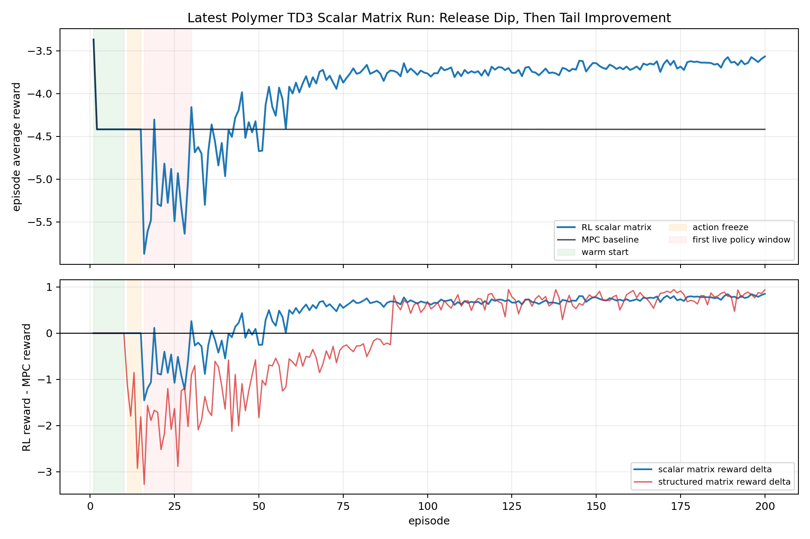
In the table below, positive mean_reward_delta means RL beats the MPC baseline.
| Method | Episodes | RL mean reward | MPC mean reward | Mean reward delta | Win rate |
|---|---|---|---|---|---|
| Scalar matrix, 2026-04-24 | 1-10 | -4.3123 | -4.3123 | -0.0000 | 40.0% |
| Scalar matrix, 2026-04-24 | 11-15 | -4.4174 | -4.4173 | -0.0001 | 40.0% |
| Scalar matrix, 2026-04-24 | 16-30 | -5.1603 | -4.4174 | -0.7429 | 13.3% |
| Scalar matrix, 2026-04-24 | 31-100 | -4.0549 | -4.4174 | +0.3625 | 78.6% |
| Scalar matrix, 2026-04-24 | 101-200 | -3.6923 | -4.4174 | +0.7251 | 100.0% |
| Scalar matrix, 2026-04-24 | 1-200 | -3.9784 | -4.4121 | +0.4337 | 81.5% |
| Structured matrix, 2026-04-24 | 1-10 | -4.3123 | -4.3123 | -0.0000 | 40.0% |
| Structured matrix, 2026-04-24 | 11-15 | -4.4174 | -4.4173 | -0.0001 | 40.0% |
| Structured matrix, 2026-04-24 | 16-30 | -5.4548 | -4.4174 | -1.0374 | 0.0% |
| Structured matrix, 2026-04-24 | 31-100 | -4.3921 | -4.4174 | +0.0253 | 61.4% |
| Structured matrix, 2026-04-24 | 101-200 | -3.5780 | -4.4174 | +0.8394 | 100.0% |
| Structured matrix, 2026-04-24 | 1-200 | -4.0614 | -4.4121 | +0.3507 | 74.5% |
Interpretation:
0.7429 reward on average.0.8394 reward on average, larger than the scalar tail improvement of 0.7251.The scalar diagnostic sampled 2000 log-uniform candidates inside the current scalar bounds.
| Diagnostic quantity | Value |
|---|---|
| Nominal physical spectral radius | 0.946394 |
| Unstable candidate fraction | 0.000 |
Near-unit candidate fraction, rho >= 0.995 |
0.006 |
| Candidate gain-ratio p95 | 0.7344 |
| Candidate gain-ratio max | 0.7855 |
Worst rho coordinate |
alpha |
| Worst gain coordinate | alpha |
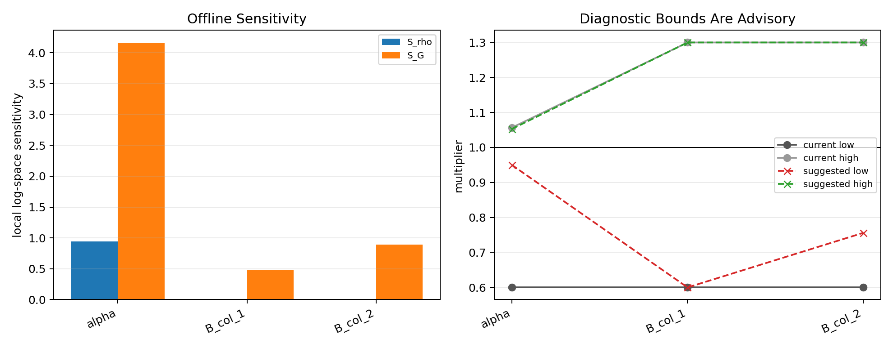
The advisory bounds from the diagnostic were:
| Coordinate | Current low | Current high | Suggested low | Suggested high | Reason |
|---|---|---|---|---|---|
alpha |
0.6000 | 1.0566 | 0.9499 | 1.0527 | rho-limited |
B_col_1 |
0.6000 | 1.3000 | 0.6000 | 1.3000 | user-bound-limited |
B_col_2 |
0.6000 | 1.3000 | 0.7559 | 1.3000 | gain-limited;user-bound-limited |
This should not be applied as a permanent cap yet. The latest successful tail behavior uses alpha well below 0.9499, so a permanent diagnostic alpha low cap may remove the useful learned behavior. The diagnostic cap is most useful as a release protection.
The structured diagnostic now gives the missing per-coordinate picture. It also sampled 2000 log-uniform candidates inside the current structured bounds.
| Structured diagnostic quantity | Value |
|---|---|
| Nominal physical spectral radius | 0.946394 |
| Unstable candidate fraction | 0.000 |
Near-unit candidate fraction, rho >= 0.995 |
0.008 |
| Candidate gain-ratio p95 | 0.7135 |
| Candidate gain-ratio max | 0.7716 |
Worst rho coordinate |
A_block_1 |
| Worst gain coordinate | A_block_2 |
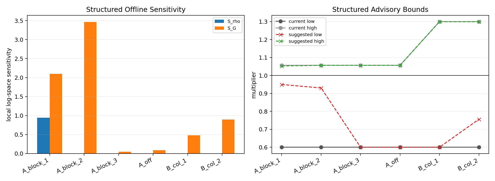
The structured advisory bounds were:
| Coordinate | Current low | Current high | Suggested low | Suggested high | Reason |
|---|---|---|---|---|---|
A_block_1 |
0.6000 | 1.0566 | 0.9497 | 1.0530 | rho-limited |
A_block_2 |
0.6000 | 1.0566 | 0.9304 | 1.0566 | gain-limited;user-bound-limited |
A_block_3 |
0.6000 | 1.0566 | 0.6000 | 1.0566 | user-bound-limited |
A_off |
0.6000 | 1.0566 | 0.6000 | 1.0566 | user-bound-limited |
B_col_1 |
0.6000 | 1.3000 | 0.6000 | 1.3000 | user-bound-limited |
B_col_2 |
0.6000 | 1.3000 | 0.7559 | 1.3000 | gain-limited;user-bound-limited |
This explains why structured mode should not use one shared cap for all A-side multipliers. A_block_1 is the stability-sensitive A coordinate, A_block_2 is the gain-sensitive A coordinate, and A_block_3 plus A_off look comparatively safe under this finite-horizon diagnostic.
The offline diagnostic starts from the current wide bounds and asks two questions for each multiplier coordinate:
For the scalar matrix method the candidate model is:
The stability diagnostic is the physical spectral radius:
The finite-horizon gain diagnostic uses the stacked Markov matrix:
The normalized gain drift is:
For each coordinate j, the diagnostic perturbs only that coordinate in log space around nominal:
Here epsilon_log = 0.02, so the local test is approximately a +/-2% multiplicative perturbation unless the current user bounds are tighter.
The local sensitivities are:
Then the diagnostic converts sensitivities into allowed log-distance from nominal. For A-side coordinates:
For all coordinates:
The current diagnostic uses:
The final advisory log-distance is the tightest of the user bound, rho limit, and gain limit:
The advisory bounds are then:
For B columns, the rho limit is ignored because B does not set open-loop eigenvalues. That is why B_col_1 stayed at the user bounds while B_col_2 received a gain-limited lower advisory bound.
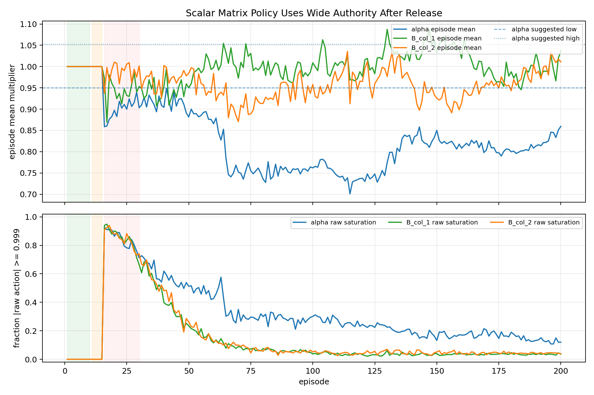
| Episodes | Mean alpha |
alpha low-hit frac |
alpha high-hit frac |
Mean B_col_1 |
Mean B_col_2 |
Mean raw saturation |
|---|---|---|---|---|---|---|
| 16-30 | 0.8986 | 23.8% | 51.2% | 0.9434 | 0.9869 | 84.4% |
| 101-200 | 0.7961 | 6.2% | 3.5% | 1.0118 | 0.9631 | 9.1% |
| 16-200 | 0.8151 | 7.5% | 12.4% | 0.9954 | 0.9581 | 21.9% |
The early live window has extreme raw action saturation: about 84.4% of scalar action coordinates are at the normalized action boundary. That is not a fine cap-selection signal. It means the actor is released while still behaving like a boundary-seeking policy. Later, saturation falls to about 9.1%, and the same broad authority becomes useful.
The latest structured run shows the same pattern with more action dimensions:
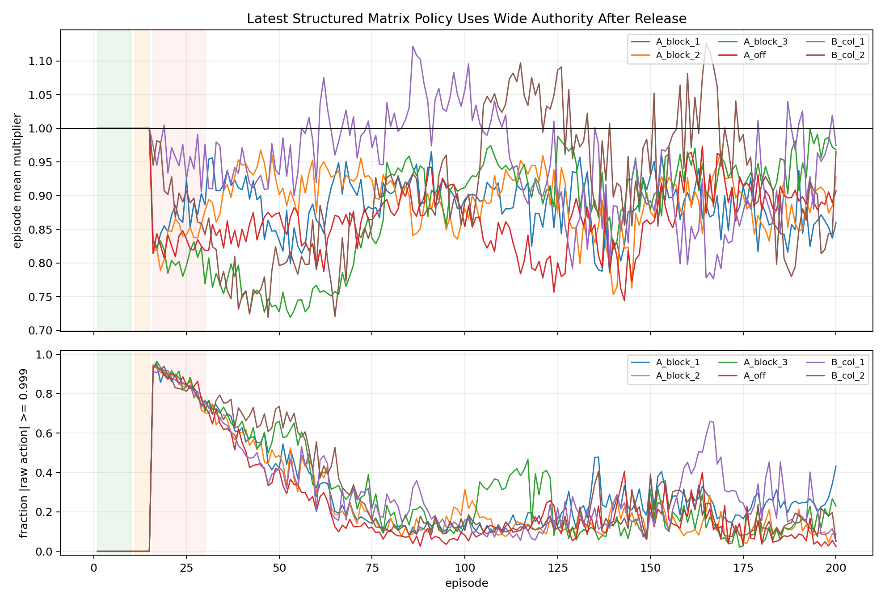
| Episodes | Mean raw saturation | A_block_1 mean |
A_block_2 mean |
A_block_3 mean |
A_off mean |
B_col_1 mean |
B_col_2 mean |
|---|---|---|---|---|---|---|---|
| 16-30 | 85.7% | 0.8673 | 0.8398 | 0.8080 | 0.8272 | 0.9585 | 0.9039 |
| 31-100 | 33.8% | 0.8951 | 0.9080 | 0.8181 | 0.8656 | 0.9880 | 0.8374 |
| 101-200 | 17.5% | 0.8798 | 0.8870 | 0.9283 | 0.8655 | 0.9119 | 0.9628 |
| 16-200 | 29.2% | 0.8846 | 0.8911 | 0.8768 | 0.8624 | 0.9445 | 0.9106 |
Structured release saturation is slightly worse than scalar release saturation (85.7% versus 84.4%), and it acts over six coordinates instead of three. This is why the structured first-live loss remains larger even though its final tail behavior is excellent.
The implemented Step 2 method is release-protected advisory caps, not a permanent static cap.
The polymer trial schedule is:
| Phase | Episodes | alpha authority |
B authority |
Purpose |
|---|---|---|---|---|
| Warm start | 1-10 | Nominal action only | Nominal action only | Preserve MPC behavior |
| Action freeze | 11-15 | Nominal executed action | Nominal executed action | Keep current protected release setup |
| Protected live release | 16-30 | Scalar: use [0.95, 1.0527]; structured: cap A_block_1 to [0.9497, 1.0530] and A_block_2 low to 0.9304 |
Keep B_col_1 wide; set B_col_2 low to about 0.756 |
Stop boundary-action release crash |
| Authority ramp | 31-60 | Gradually relax toward current wide lower bound | Gradually relax toward current wide bounds | Allow learning to recover useful wide behavior |
| Full authority | 61-200 | Current bounds | Current bounds | Preserve the tail improvement seen in polymer |
This uses the diagnostic as a temporary guardrail:
The release bounds should interpolate from diagnostic-safe bounds to the current training bounds:
Here r_e = 0 at the start of protected live release and r_e = 1 after the ramp ends. Use log interpolation because the multipliers are multiplicative.
The actor should still output its normal raw action:
That raw action is mapped to the normal wide multiplier range exactly as before:
Step 2 adds a second step at execution time only:
The MPC model uses theta_exec, not theta_policy. The logs should store both values so we can see whether the policy is still trying to hit unsafe authority while the guard is active.
The effective bounds are phase-dependent:
| Phase | Episodes | Effective lower bound | Effective upper bound | What happens |
|---|---|---|---|---|
| Warm start | 1-10 | 1.0 |
1.0 |
The executed multiplier is nominal. This preserves pure MPC behavior while the replay buffer fills. |
| Action freeze | 11-15 | 1.0 |
1.0 |
The actor can be present internally, but the executed multiplier is still nominal. This avoids an abrupt first action after warm start. |
| Protected live release | 16-30 | diagnostic_low |
diagnostic_high |
The actor finally controls the model, but only inside the diagnostic-safe release box. |
| Authority ramp | 31-60 | log interpolation from diagnostic low to wide low | log interpolation from diagnostic high to wide high | The guard relaxes gradually, so the critic sees a smoother transition instead of one sudden jump to full authority. |
| Full authority | 61-200 | wide_low |
wide_high |
The original experiment authority returns. This preserves the successful tail behavior. |
For the scalar polymer matrix case, the resulting example schedule is:
| Episode | Phase | alpha bounds |
B_col_1 bounds |
B_col_2 bounds |
|---|---|---|---|---|
| 1 | warm start | [1.0000, 1.0000] |
[1.0000, 1.0000] |
[1.0000, 1.0000] |
| 15 | action freeze | [1.0000, 1.0000] |
[1.0000, 1.0000] |
[1.0000, 1.0000] |
| 16 | protected live release | [0.9499, 1.0527] |
[0.6000, 1.3000] |
[0.7559, 1.3000] |
| 30 | protected live release | [0.9499, 1.0527] |
[0.6000, 1.3000] |
[0.7559, 1.3000] |
| 45 | authority ramp | [0.7550, 1.0546] |
[0.6000, 1.3000] |
[0.6735, 1.3000] |
| 60 | authority ramp end | [0.6000, 1.0566] |
[0.6000, 1.3000] |
[0.6000, 1.3000] |
| 61 | full authority | [0.6000, 1.0566] |
[0.6000, 1.3000] |
[0.6000, 1.3000] |
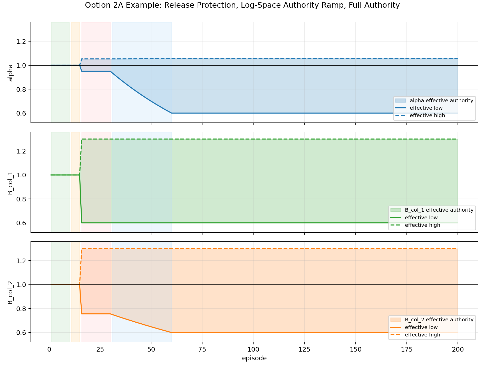
The important detail is that this is not behavior cloning and not a new reward. It is an execution authority schedule. The actor can still learn, but the first live policy window cannot immediately jump to the most damaging model multipliers.
For replay and critic consistency, the transition should store the executed action or executed multiplier as the action that affected the plant. The unclipped policy action should still be logged for diagnostics:
This matters because if the critic trains on the unclipped action while the plant experienced the clipped action, the critic learns the wrong action-value relationship during the release window.
This update uses the latest Step 2 polymer runs:
Polymer/Results/td3_multipliers_disturb/20260424_204554/input_data.pklPolymer/Results/disturb_compare_td3_multipliers/20260424_204610/input_data.pklPolymer/Results/td3_structured_matrices_disturb/20260424_204732/input_data.pklPolymer/Results/disturb_compare_td3_structured_matrices/20260424_204751/input_data.pklBoth runs have release_guard_enabled = True. The release schedule is:
| Phase | Episodes | Scalar executed bounds | Structured executed bounds |
|---|---|---|---|
| Warm start | 1-10 | nominal only | nominal only |
| Action freeze | 11-15 | nominal only | nominal only |
| Protected live release | 16-30 | Step 1 diagnostic bounds | Step 1 per-coordinate diagnostic bounds |
| Authority ramp | 31-60 | log-space ramp to wide bounds | log-space ramp to wide bounds |
| Full authority | 61-200 | original wide bounds | original wide bounds |
The headline result is positive: Step 2 strongly reduces the first-live release crash without removing the later full-authority improvement.
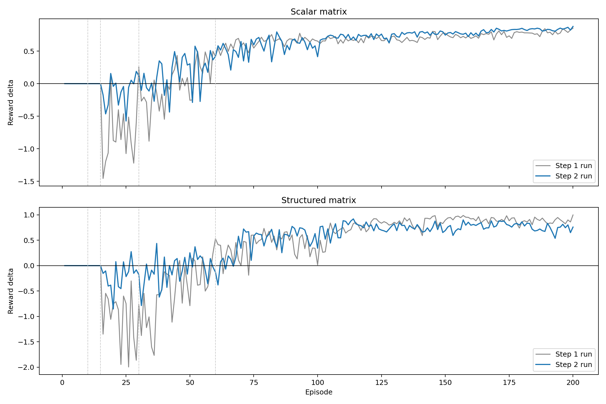
Positive reward delta means RL beats the MPC baseline.
| Method | Window | RL mean reward | MPC mean reward | Mean reward delta | Win rate |
|---|---|---|---|---|---|
| Scalar Step 2 | 1-10 | -4.3123 | -4.3123 | -0.0000 | 40.0% |
| Scalar Step 2 | 11-15 | -4.4174 | -4.4173 | -0.0001 | 40.0% |
| Scalar Step 2 | 16-30 protected | -4.5249 | -4.4174 | -0.1075 | 33.3% |
| Scalar Step 2 | 31-60 ramp | -4.2566 | -4.4174 | +0.1608 | 73.3% |
| Scalar Step 2 | 61-100 full | -3.8499 | -4.4173 | +0.5675 | 100.0% |
| Scalar Step 2 | 101-200 tail | -3.6415 | -4.4174 | +0.7758 | 100.0% |
| Scalar Step 2 | 1-200 full run | -3.8947 | -4.4121 | +0.5175 | 86.5% |
| Structured Step 2 | 1-10 | -4.3123 | -4.3123 | -0.0000 | 40.0% |
| Structured Step 2 | 11-15 | -4.4174 | -4.4173 | -0.0001 | 40.0% |
| Structured Step 2 | 16-30 protected | -4.6226 | -4.4174 | -0.2052 | 20.0% |
| Structured Step 2 | 31-60 ramp | -4.4964 | -4.4174 | -0.0789 | 43.3% |
| Structured Step 2 | 61-100 full | -3.9591 | -4.4173 | +0.4582 | 92.5% |
| Structured Step 2 | 101-200 tail | -3.6599 | -4.4174 | +0.7575 | 100.0% |
| Structured Step 2 | 1-200 full run | -3.9690 | -4.4121 | +0.4431 | 79.5% |
Compared with Step 1:
| Method | Step 1 protected-window delta | Step 2 protected-window delta | Improvement | Step 1 full-run delta | Step 2 full-run delta |
|---|---|---|---|---|---|
| Scalar matrix | -0.7429 | -0.1075 | +0.6354 | +0.4337 | +0.5175 |
| Structured matrix | -1.0374 | -0.2052 | +0.8322 | +0.3507 | +0.4431 |
This is the key evidence that the Step 1 diagnostic bounds were useful as temporary release bounds. They were not just theoretical stability numbers; they directly reduced the release-window performance loss.
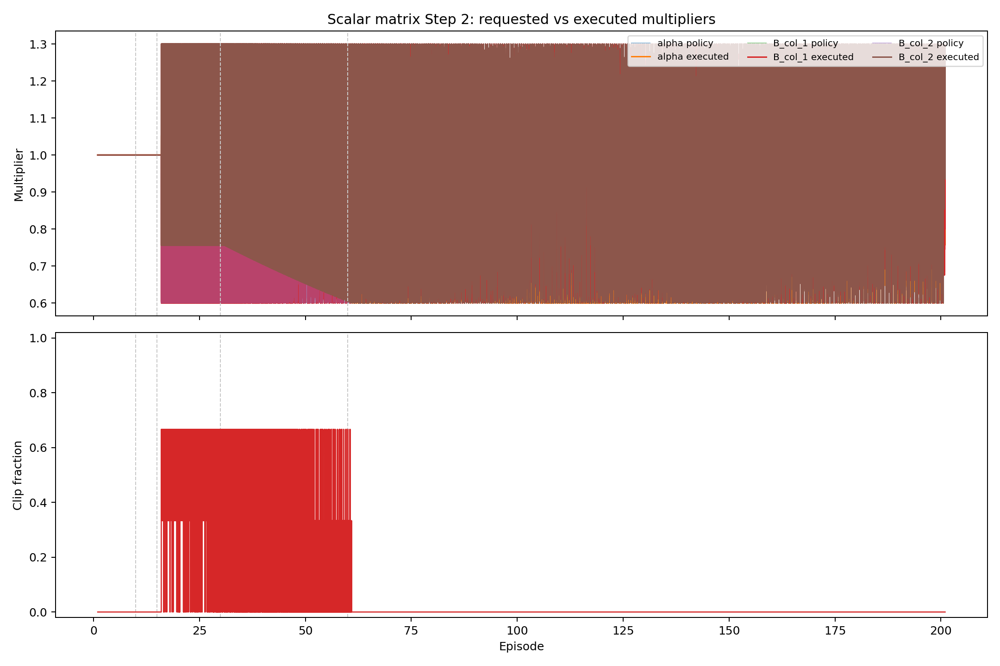
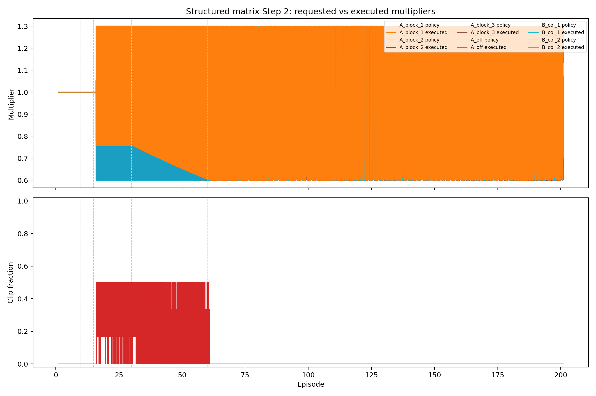
| Method | Window | Mean release clip fraction | Mean raw saturation | Mean policy-executed gap |
|---|---|---|---|---|
| Scalar Step 2 | 16-30 protected | 46.4% | 87.5% | 0.0694 |
| Scalar Step 2 | 31-60 ramp | 28.4% | 48.3% | 0.0225 |
| Scalar Step 2 | 61-100 full | 0.0% | 20.1% | 0.0000 |
| Scalar Step 2 | 101-200 tail | 0.0% | 18.6% | 0.0000 |
| Structured Step 2 | 16-30 protected | 29.5% | 89.6% | 0.0562 |
| Structured Step 2 | 31-60 ramp | 23.2% | 62.2% | 0.0211 |
| Structured Step 2 | 61-100 full | 0.0% | 38.0% | 0.0000 |
| Structured Step 2 | 101-200 tail | 0.0% | 34.1% | 0.0000 |
Interpretation:
87.5% in episodes 16-30, and structured raw action saturation was 89.6%.34.1% in the tail), so structured mode probably still needs smaller networks, stronger smoothness, or an acceptance gate.The most important scalar coordinates were:
| Window | Coordinate | Policy mean | Executed mean | Clip fraction | Mean abs gap |
|---|---|---|---|---|---|
| 16-30 protected | alpha |
0.8710 | 1.0087 | 95.0% | 0.1418 |
| 16-30 protected | B_col_1 |
0.9494 | 0.9494 | 0.0% | 0.0000 |
| 16-30 protected | B_col_2 |
0.9794 | 1.0459 | 44.1% | 0.0665 |
| 31-60 ramp | alpha |
0.8744 | 0.9234 | 63.3% | 0.0503 |
| 31-60 ramp | B_col_2 |
1.0452 | 1.0623 | 21.8% | 0.0170 |
| 101-200 tail | alpha |
0.8435 | 0.8435 | 0.0% | 0.0000 |
| 101-200 tail | B_col_1 |
0.9697 | 0.9697 | 0.0% | 0.0000 |
| 101-200 tail | B_col_2 |
0.9902 | 0.9902 | 0.0% | 0.0000 |
For scalar mode, alpha was the release bottleneck. The policy requested an average alpha = 0.8710 in the protected window, but the guard executed alpha = 1.0087. This is exactly what we wanted: keep the release model close to nominal while the actor is still unstable, then allow low alpha again later. The tail still uses low alpha = 0.8435, and it beats MPC strongly.
The most important structured coordinates were:
| Window | Coordinate | Policy mean | Executed mean | Clip fraction | Mean abs gap |
|---|---|---|---|---|---|
| 16-30 protected | A_block_1 |
0.8597 | 1.0066 | 96.1% | 0.1506 |
| 16-30 protected | A_block_2 |
0.8841 | 1.0069 | 38.6% | 0.1228 |
| 16-30 protected | A_block_3 |
0.8233 | 0.8233 | 0.0% | 0.0000 |
| 16-30 protected | A_off |
0.8048 | 0.8048 | 0.0% | 0.0000 |
| 16-30 protected | B_col_2 |
0.9933 | 1.0571 | 42.3% | 0.0638 |
| 31-60 ramp | A_block_1 |
0.8571 | 0.9145 | 71.9% | 0.0588 |
| 31-60 ramp | A_block_2 |
0.9127 | 0.9523 | 27.5% | 0.0396 |
| 31-60 ramp | B_col_2 |
0.9427 | 0.9708 | 39.6% | 0.0281 |
| 101-200 tail | A_block_1 |
0.8938 | 0.8938 | 0.0% | 0.0000 |
| 101-200 tail | A_block_2 |
0.8415 | 0.8415 | 0.0% | 0.0000 |
| 101-200 tail | B_col_1 |
1.0158 | 1.0158 | 0.0% | 0.0000 |
| 101-200 tail | B_col_2 |
0.9911 | 0.9911 | 0.0% | 0.0000 |
For structured mode, Step 2 confirms the Step 1 diagnosis: A_block_1, A_block_2, and B_col_2 are the coordinates that need release protection. A_block_3, A_off, and B_col_1 were largely allowed to execute as requested during protected release.
Step 2 should stay in the polymer matrix and structured-matrix notebooks. The remaining problem is no longer "how do we calculate release caps?" The remaining problem is "why does the actor still request saturated actions during release?"
The saved runner bundle does not record the actor/critic hidden-layer sizes, so the analysis above is based on the release-guard logs, not on a confirmed network-size comparison. The next polymer trial should keep Step 2 on and use the reduced network defaults of two hidden layers with 256 units. The success criterion is:
For distillation, this result supports Step 2 conceptually, but I would still keep distillation disabled until the smaller-network polymer rerun is reviewed. Distillation has a stronger history of recovering without beating MPC, so it likely needs Step 2 plus Step 3 acceptance/fallback rather than Step 2 alone.
This update compares the first Step 2 runs above against the latest Step 2-only polymer reruns after the default TD3 network size was reduced to [256, 256]. The latest bundles are:
Polymer/Results/td3_multipliers_disturb/20260424_212859/input_data.pklPolymer/Results/disturb_compare_td3_multipliers/20260424_212913/input_data.pklPolymer/Results/td3_structured_matrices_disturb/20260424_212944/input_data.pklPolymer/Results/disturb_compare_td3_structured_matrices/20260424_213002/input_data.pklImportant provenance note: the result bundles still do not store an explicit actor/critic architecture snapshot. This section treats the latest runs as the [256, 256] runs based on the run timing, the changed defaults, and the user's run note. A future runner improvement should save the hidden-layer list into input_data.pkl so this comparison is directly auditable.
These latest runs are not Step 3 runs. They have release_guard_enabled = True, but they do not contain the Step 3 mpc_acceptance_* logs. So the comparison below isolates the network-size change under Step 2.
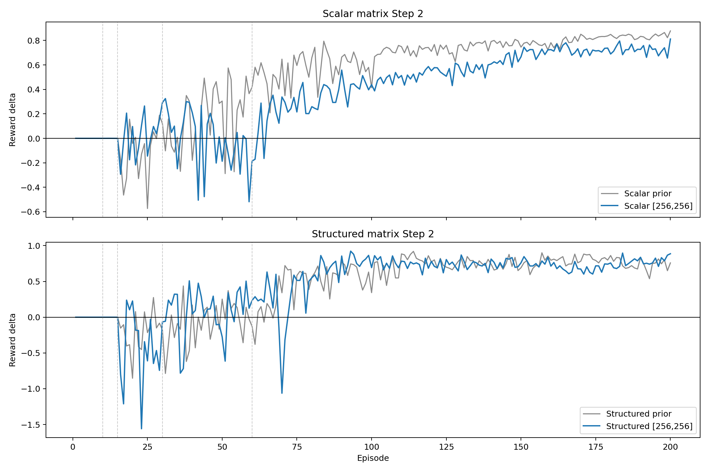
Positive reward delta means RL beats the MPC baseline.
| Method | Window | Mean reward delta | Win rate | Raw saturation | Release clip |
|---|---|---|---|---|---|
| Scalar prior Step 2 | 16-30 protected | -0.1075 | 33.3% | 87.5% | 46.4% |
| Scalar prior Step 2 | 31-60 ramp | +0.1608 | 73.3% | 48.3% | 28.4% |
| Scalar prior Step 2 | 61-100 full | +0.5675 | 100.0% | 20.1% | 0.0% |
| Scalar prior Step 2 | 101-200 tail | +0.7758 | 100.0% | 18.6% | 0.0% |
| Scalar prior Step 2 | 1-200 full run | +0.5175 | 86.5% | 27.1% | 7.7% |
Scalar [256, 256] Step 2 |
16-30 protected | +0.0204 | 53.3% | 57.6% | 36.9% |
Scalar [256, 256] Step 2 |
31-60 ramp | -0.0209 | 56.7% | 44.9% | 29.4% |
Scalar [256, 256] Step 2 |
61-100 full | +0.3021 | 95.0% | 29.7% | 0.0% |
Scalar [256, 256] Step 2 |
101-200 tail | +0.6366 | 100.0% | 26.2% | 0.0% |
Scalar [256, 256] Step 2 |
1-200 full run | +0.3771 | 84.5% | 30.1% | 7.2% |
| Structured prior Step 2 | 16-30 protected | -0.2052 | 20.0% | 89.6% | 29.5% |
| Structured prior Step 2 | 31-60 ramp | -0.0789 | 43.3% | 62.2% | 23.2% |
| Structured prior Step 2 | 61-100 full | +0.4582 | 92.5% | 38.0% | 0.0% |
| Structured prior Step 2 | 101-200 tail | +0.7575 | 100.0% | 34.1% | 0.0% |
| Structured prior Step 2 | 1-200 full run | +0.4431 | 79.5% | 40.7% | 5.7% |
Structured [256, 256] Step 2 |
16-30 protected | -0.4180 | 20.0% | 63.7% | 27.1% |
Structured [256, 256] Step 2 |
31-60 ramp | +0.0794 | 70.0% | 45.2% | 18.6% |
Structured [256, 256] Step 2 |
61-100 full | +0.4880 | 92.5% | 41.7% | 0.0% |
Structured [256, 256] Step 2 |
101-200 tail | +0.7414 | 100.0% | 53.9% | 0.0% |
Structured [256, 256] Step 2 |
1-200 full run | +0.4489 | 83.5% | 46.8% | 4.8% |
The scalar result says the smaller network made the release behavior safer but gave up some final performance. The protected-window reward delta improved from -0.1075 to +0.0204, and raw saturation dropped from 87.5% to 57.6%. That is exactly the direction we wanted for first live release. But the tail reward delta fell from +0.7758 to +0.6366, and full-run reward delta fell from +0.5175 to +0.3771. So the scalar [256, 256] policy is calmer at release, but less aggressive or less effective after full authority returns.
The structured result is more mixed. The protected-window reward got worse, from -0.2052 to -0.4180, even though raw saturation dropped from 89.6% to 63.7%. The ramp improved from -0.0789 to +0.0794, and the full-run result improved slightly from +0.4431 to +0.4489. The tail result is essentially similar, falling only from +0.7575 to +0.7414. This means network size alone did not solve structured release quality. It changed the action distribution, but the early structured candidates can still be bad even when they are less saturated.
This table reports [256, 256] minus the prior Step 2 run.
| Family | Window | Reward-delta change | Win-rate change | Raw-saturation change | Release-clip change |
|---|---|---|---|---|---|
| Scalar | 16-30 protected | +0.1280 | +20.0 pp | -29.9 pp | -9.5 pp |
| Scalar | 31-60 ramp | -0.1817 | -16.7 pp | -3.4 pp | +1.1 pp |
| Scalar | 101-200 tail | -0.1392 | +0.0 pp | +7.5 pp | +0.0 pp |
| Scalar | 1-200 full run | -0.1404 | -2.0 pp | +3.0 pp | -0.6 pp |
| Structured | 16-30 protected | -0.2127 | +0.0 pp | -25.9 pp | -2.4 pp |
| Structured | 31-60 ramp | +0.1584 | +26.7 pp | -17.0 pp | -4.6 pp |
| Structured | 101-200 tail | -0.0160 | +0.0 pp | +19.8 pp | +0.0 pp |
| Structured | 1-200 full run | +0.0057 | +4.0 pp | +6.1 pp | -0.9 pp |
The key point is that smaller networks reduced early saturation in both families, but this did not translate uniformly into better reward. In scalar mode, reduced saturation helped the protected window. In structured mode, reduced saturation helped the ramp but not the protected window. That tells us the structured problem is not only "the policy hits the raw action boundary." It is also "some in-bound structured candidate models still lead to locally bad MPC decisions."
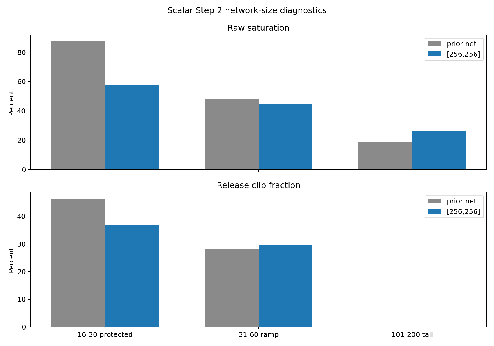
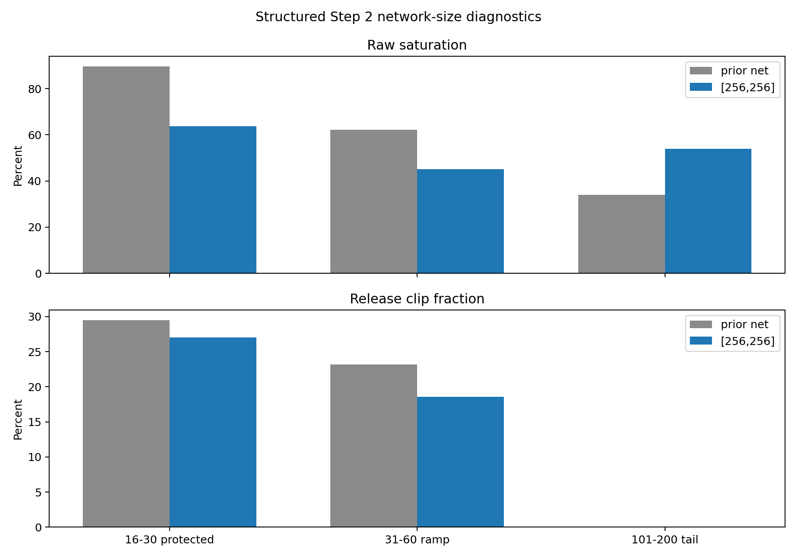
For the latest scalar [256, 256] run, the main release coordinate is still alpha:
| Window | Coordinate | Policy mean | Executed mean | Clip fraction |
|---|---|---|---|---|
| 16-30 protected | alpha |
0.9354 | 1.0180 | 81.5% |
| 16-30 protected | B_col_2 |
1.0504 | 1.0891 | 29.2% |
| 101-200 tail | alpha |
0.9550 | 0.9550 | 0.0% |
| 101-200 tail | B_col_2 |
0.9290 | 0.9290 | 0.0% |
Compared with the prior scalar run, alpha is much closer to nominal during protected release: policy mean moved from 0.8710 to 0.9354. The guard still clips it heavily, but it has less work to do. That is why the protected-window reward became slightly positive.
For the latest structured [256, 256] run, the sensitive coordinates remain the same:
| Window | Coordinate | Policy mean | Executed mean | Clip fraction |
|---|---|---|---|---|
| 16-30 protected | A_block_1 |
0.8887 | 1.0081 | 84.6% |
| 16-30 protected | A_block_2 |
0.8858 | 1.0014 | 40.0% |
| 16-30 protected | B_col_2 |
0.9966 | 1.0488 | 37.8% |
| 101-200 tail | A_block_1 |
0.8579 | 0.8579 | 0.0% |
| 101-200 tail | A_block_2 |
0.8063 | 0.8063 | 0.0% |
| 101-200 tail | B_col_2 |
0.9602 | 0.9602 | 0.0% |
The structured policy still pushes A_block_1 and A_block_2 low, and the protected guard still moves them back toward nominal. However, the reward got worse during protected release. The likely reason is that structured mode has more coupled degrees of freedom: even if each coordinate is inside its Step 1 diagnostic box, the joint candidate can still create a poor finite-horizon MPC move for the current state. This is exactly the type of failure Step 3 is designed to catch.
The network-size change did matter, but it is not a universal improvement.
| Family | Did [256, 256] help release? |
Did [256, 256] help full-run reward? |
Interpretation |
|---|---|---|---|
| Scalar matrix | Yes | No | Smaller network reduced first-live aggression and made protected release slightly better than MPC, but it reduced later improvement. |
| Structured matrix | Partly | Slightly | Smaller network reduced early saturation and improved the ramp/full-run result, but protected release got worse. |
For polymer, I would keep [256, 256] for now while Step 3 is running, because it is less extreme and the full-run results remain positive. I would not shrink below [256, 256] yet. The next useful evidence is the Step 3 acceptance fraction and fallback fraction:
-0.4180 delta, then the problem was local candidate quality, not network size.For distillation, this comparison strengthens the argument for keeping Step 2 and Step 3 disabled until polymer Step 3 is reviewed. Distillation is more sensitive than polymer, and the structured polymer result shows that "less saturated" is not the same as "safe to execute." Distillation should receive the combined release guard plus acceptance/fallback gate, not just a smaller actor network.
Step 2 answers: "Is the requested multiplier inside a release-safe authority box?" Step 3 would answer a different question: "Even if the multiplier is inside the allowed box, does this candidate prediction model look better than nominal MPC for the current decision?"
That distinction matters. A candidate can be stable, inside the cap, and solvable by MPC, but still produce a worse control move than the nominal model. This is especially likely in distillation because the user-reported run recovered after release but still did not beat MPC. That means the problem is not only release shock; it may be that many accepted model multipliers are not performance-improving for the current state and setpoint.
The Step 3 gate would compare the RL-assisted candidate against the nominal MPC model before executing the plant move:
Then use a simple acceptance rule:
If accept_t = 1, execute the RL-assisted MPC candidate. If accept_t = 0, execute nominal MPC for that step and log the rejected policy request.
Algorithmically:
| Step | Action |
|---|---|
| 1 | Actor proposes raw action a_policy. |
| 2 | Step 2 clips it to executable multipliers theta_exec. |
| 3 | Build candidate model (A_exec, B_exec). |
| 4 | Solve candidate MPC and nominal MPC from the same state. |
| 5 | Reject candidate if the solve fails, the model is invalid, or candidate cost is worse than nominal by more than tolerance. |
| 6 | Execute candidate move if accepted; otherwise execute nominal MPC move. |
| 7 | Store the actually executed raw action in replay and log the requested action separately. |
The first Step 3 version should be conservative. I would start with:
| Parameter | First value | Meaning |
|---|---|---|
epsilon_J |
0.00 to 0.02 |
Candidate must be no worse than nominal, or only slightly worse if we want exploration. |
epsilon_abs |
small positive value | Prevents numerical noise from causing unnecessary rejection. |
fallback_action |
nominal raw action | Replay should match what the plant actually experienced. |
log_rejected_policy |
True |
Keep evidence of what the actor wanted, even when rejected. |
The main diagnostic outputs would be:
| Metric | Interpretation |
|---|---|
acceptance_fraction |
How often RL assistance is actually trusted. |
fallback_fraction |
How much the method relies on nominal MPC. |
accepted_reward_delta |
Whether accepted candidate moves are actually better than MPC. |
rejected_policy_saturation |
Whether the actor is still asking for boundary actions when rejected. |
cost_margin = J_cand - J_nom |
How far the candidate is from passing the gate. |
For polymer, Step 3 is not urgent because Step 2 already gives positive full-run and tail performance. For distillation, Step 3 is more important. Distillation has shown that recovery alone is not enough: the policy can recover from release but still fail to beat MPC. A Step 3 gate would protect distillation from executing RL-assisted models that are stable and feasible but not locally better than the nominal MPC decision.
Step 3 is implemented as a strict nominal-MPC cost gate for the scalar and structured matrix supervisors. The polymer matrix and structured matrix defaults enable it; the distillation matrix and structured matrix defaults keep it disabled.
The implemented gate sequence is:
| Stage | Meaning |
|---|---|
| Policy request | Actor proposes the wide raw action. |
| Step 2 candidate | Release guard clips the request to the candidate multiplier. |
| Step 3 acceptance | Candidate MPC is solved, nominal MPC is solved, and the candidate plan is judged under the nominal model. |
| Final execution | Execute candidate if accepted; otherwise execute nominal MPC. |
| Replay | Store the raw action that produced the final executed behavior. |
The result bundle now separates:
| Log group | Meaning |
|---|---|
policy_multiplier_log / mapped_multiplier_log |
Actor-requested multiplier before release clipping. |
candidate_multiplier_log |
Step 2 candidate multiplier after release clipping. |
executed_multiplier_log / effective_multiplier_log |
Final multiplier after Step 3 acceptance or fallback. |
mpc_acceptance_accepted_log |
1 when candidate is trusted. |
mpc_acceptance_fallback_active_log |
1 when nominal MPC is executed instead. |
mpc_acceptance_cost_margin_log |
Candidate nominal-evaluated cost minus nominal MPC cost. |
This update uses the latest Step 3 polymer runs:
Polymer/Results/td3_multipliers_disturb/20260424_231144/input_data.pklPolymer/Results/disturb_compare_td3_multipliers/20260424_231155/input_data.pklPolymer/Results/td3_structured_matrices_disturb/20260424_231221/input_data.pklPolymer/Results/disturb_compare_td3_structured_matrices/20260424_231233/input_data.pklThe user observation is correct: the Step 3 result is essentially MPC. That happened because the strict acceptance gate fell back to nominal MPC for almost every live control decision.
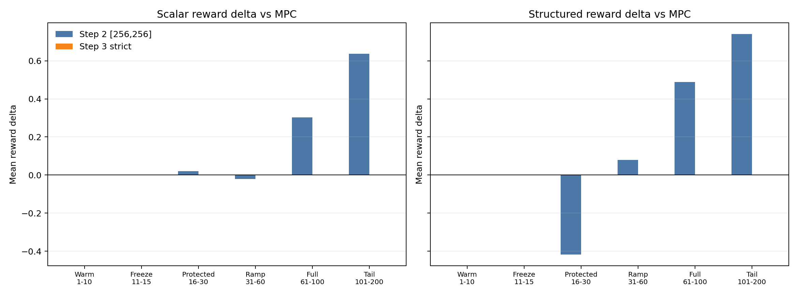
| Method | Window | Step 2 [256, 256] reward delta |
Step 3 strict reward delta | Step 3 accepted | Step 3 fallback |
|---|---|---|---|---|---|
| Scalar matrix | 16-30 protected | +0.0204 | -0.000015 | 0.40% | 99.60% |
| Scalar matrix | 31-60 ramp | -0.0209 | +0.000045 | 0.59% | 99.41% |
| Scalar matrix | 61-100 full | +0.3021 | +0.000004 | 0.97% | 99.03% |
| Scalar matrix | 101-200 tail | +0.6366 | +0.000021 | 0.70% | 99.30% |
| Scalar matrix | 1-200 full run | +0.3771 | +0.000015 | 8.16% | 91.84% |
| Structured matrix | 16-30 protected | -0.4180 | +0.000039 | 0.36% | 99.64% |
| Structured matrix | 31-60 ramp | +0.0794 | +0.000056 | 0.22% | 99.78% |
| Structured matrix | 61-100 full | +0.4880 | -0.000015 | 0.00% | 100.00% |
| Structured matrix | 101-200 tail | +0.7414 | -0.000008 | 0.00% | 100.00% |
| Structured matrix | 1-200 full run | +0.4489 | +0.000002 | 7.56% | 92.44% |
The full-run acceptance fractions of 8.16% and 7.56% are misleadingly high because warm start and action freeze are nominal phases. In episodes 1-15, the candidate is already nominal, so the gate accepts 100% of the decisions. After the first live release begins, acceptance collapses:
| Method | Live episodes 16-200 acceptance | Live episodes 16-200 fallback |
|---|---|---|
| Scalar matrix | 0.72% | 99.28% |
| Structured matrix | 0.064% | 99.936% |
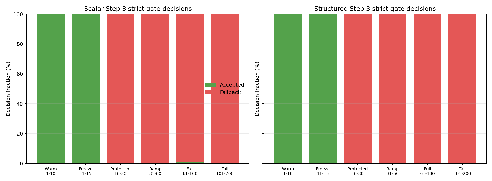
The reason-code logs show that this was not caused by MPC candidate solve failures. The dominant reason code is 2, which means REJECTED_COST. The candidate solver produced candidate plans, but the strict nominal-cost judge rejected them.
| Method | Reason 1: accepted |
Reason 2: rejected by cost |
Reason 3: candidate solve failed |
|---|---|---|---|
| Scalar matrix | 13,061 decisions | 146,939 decisions | 0 decisions |
| Structured matrix | 12,095 decisions | 147,905 decisions | 0 decisions |
This explains why the plant behavior became almost exactly MPC. On fallback, the final executed multiplier is nominal. The runner still logs the candidate multiplier separately, but the plant receives the nominal MPC move. Therefore the reward delta collapses to numerical noise around zero.
The strict Step 3 rule was:
with absolute_tolerance = 1e-8 and relative_tolerance = 0.0.
This is conservative, but it is also almost guaranteed to reject useful RL candidates. The reason is simple: J_t^{nom} is already the optimized nominal MPC objective for the nominal model. If the candidate sequence is evaluated under the same nominal model and the same nominal objective, it usually cannot beat the nominal optimizer. At best, it can match it up to numerical tolerance. So the strict test does not ask "is this candidate safe enough to try?" It asks "does this candidate reproduce nominal MPC?"
That is why the result became MPC.
The cost margins confirm this. Most margins are small, but they are still positive, and a positive margin larger than 1e-8 is rejected:
| Method | Mean cost margin | Median cost margin | 90th percentile margin | 90th percentile relative margin |
|---|---|---|---|---|
| Scalar matrix | 0.005056 | 0.00000810 | 0.003038 | 3.1820% |
| Structured matrix | 0.005530 | 0.00000419 | 0.002856 | 3.6719% |
The median margins are tiny. That suggests the gate is rejecting many candidates that are almost nominal under the nominal objective. The high-percentile margins are larger, so the gate is still useful as a shield; it just needs a tolerance band.
Using the saved cost logs, we can replay the acceptance rule without rerunning training. The table below asks: if the same Step 3 run had used a small relative tolerance, how many live decisions would have passed?
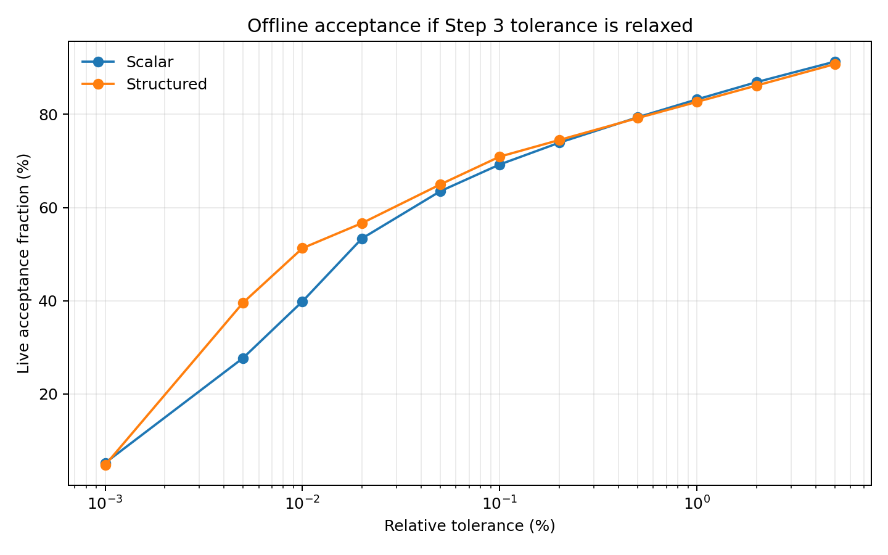
| Relative tolerance | Scalar live acceptance | Structured live acceptance |
|---|---|---|
| 0.001% | 5.24% | 4.77% |
| 0.005% | 27.73% | 39.59% |
| 0.010% | 39.87% | 51.28% |
| 0.020% | 53.35% | 56.65% |
| 0.050% | 63.51% | 64.96% |
| 0.100% | 69.24% | 70.92% |
| 0.500% | 79.36% | 79.19% |
| 1.000% | 83.20% | 82.66% |
The practical conclusion is that the next Step 3 version should not use strict no-worse acceptance. It should use the nominal MPC objective as a trust-region budget:
The first polymer rerun should use:
| Parameter | Recommended next value | Why |
|---|---|---|
relative_tolerance |
1e-4 |
This is only 0.010% nominal-cost slack, but would have accepted about 40% of scalar live decisions and 51% of structured live decisions in the saved run. |
absolute_tolerance |
1e-8 initially |
Keeps the next run directly comparable to the strict run; increase later only if low-cost decisions remain over-rejected. |
| Step 2 release guard | keep enabled | Still protects first live release from extreme multiplier authority. |
| Distillation Step 3 | keep disabled | Do not transfer until polymer proves that the tolerant gate beats strict fallback. |
If the tolerant run still behaves like MPC, increase relative_tolerance to 2e-4. If it degrades badly, return to 5e-5 or make the tolerance phase-dependent: smaller during protected release, wider after full authority.
The target behavior for Step 3B is not 100% acceptance. A good first target is:
30% to 60%,[256, 256] tail gain.Implementation update: polymer matrix and structured-matrix defaults now use relative_tolerance = 1e-4 for mpc_acceptance_fallback. Distillation matrix and structured-matrix defaults remain disabled. To run Step 3B, restart or rerun the polymer notebook parameter/config cells so CTRL["mpc_acceptance_fallback"] is reloaded from systems/polymer/notebook_params.py.
This update uses the latest polymer Step 3B runs from 2026-04-25:
Polymer/Results/td3_multipliers_disturb/20260425_005143/input_data.pklPolymer/Results/disturb_compare_td3_multipliers/20260425_005156/input_data.pklPolymer/Results/td3_structured_matrices_disturb/20260425_005309/input_data.pklPolymer/Results/disturb_compare_td3_structured_matrices/20260425_005324/input_data.pklIt also uses the latest distillation runs from 2026-04-25:
Distillation/Results/distillation_residual_td3_disturb_fluctuation_mismatch_rho_unified/20260425_082259/input_data.pklDistillation/Results/distillation_compare_residual_td3_disturb_fluctuation/20260425_082310/input_data.pklDistillation/Results/distillation_matrix_td3_disturb_fluctuation_mismatch_unified/20260425_082831/input_data.pklDistillation/Results/distillation_compare_matrix_td3_disturb_fluctuation_mismatch/20260425_082842/input_data.pklCorrection/provenance note: the latest distillation matrix run is not a Step 2 or Step 3 run. The saved result has no release_guard_enabled or mpc_acceptance_enabled logs. It is the pre-protection distillation matrix run that used tight A bounds, wide B bounds, and the user-reported low TD3 exploration and target policy smoothing noise of 0.01. Therefore the severe matrix degradation below should not be interpreted as a failure of Step 2 or Step 3 on distillation. It is the reason we should not transfer matrix authority to distillation without release protection and better diagnostics.
The Step 3B tolerance did change the gate behavior, but it did not improve polymer performance. The result can look MPC-like in the plots because the tail is close to MPC and fallback is still frequent. However, unlike strict Step 3, Step 3B did allow many live candidates through. The issue is not "no authority" anymore. The issue is that many accepted candidates are not plant-useful.
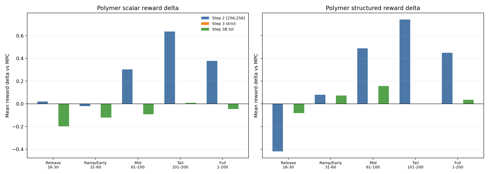
| Polymer method | Window | Step 2 [256, 256] delta |
Step 3 strict delta | Step 3B tolerant delta |
|---|---|---|---|---|
| Scalar matrix | 16-30 release | +0.0204 | -0.000015 | -0.1976 |
| Scalar matrix | 31-60 ramp/early | -0.0209 | +0.000045 | -0.1202 |
| Scalar matrix | 61-100 mid | +0.3021 | +0.000004 | -0.0919 |
| Scalar matrix | 101-200 tail | +0.6366 | +0.000021 | +0.0088 |
| Scalar matrix | 1-200 full | +0.3771 | +0.000015 | -0.0468 |
| Structured matrix | 16-30 release | -0.4180 | +0.000039 | -0.0825 |
| Structured matrix | 31-60 ramp/early | +0.0794 | +0.000056 | +0.0727 |
| Structured matrix | 61-100 mid | +0.4880 | -0.000015 | +0.1565 |
| Structured matrix | 101-200 tail | +0.7414 | -0.000008 | -0.0003 |
| Structured matrix | 1-200 full | +0.4489 | +0.000002 | +0.0359 |
Step 3B solved the strict-gate problem mechanically: it raised live acceptance into the range we expected. But the reward result shows that live acceptance alone is not the objective.
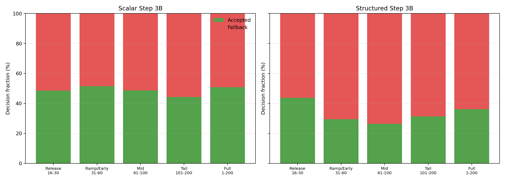
| Polymer method | Window | Accepted | Fallback | Median cost margin | 90th percentile relative margin |
|---|---|---|---|---|---|
| Scalar matrix | 16-30 release | 48.54% | 51.46% | 0.00000618 | 4.224% |
| Scalar matrix | 31-60 ramp/early | 51.42% | 48.58% | 0.00000761 | 0.899% |
| Scalar matrix | 61-100 mid | 48.69% | 51.31% | 0.00000925 | 2.297% |
| Scalar matrix | 101-200 tail | 44.27% | 55.73% | 0.00000784 | 1.864% |
| Structured matrix | 16-30 release | 43.68% | 56.32% | 0.00000939 | 12.010% |
| Structured matrix | 31-60 ramp/early | 29.48% | 70.52% | 0.00001506 | 56.552% |
| Structured matrix | 61-100 mid | 26.33% | 73.67% | 0.00002460 | 5.725% |
| Structured matrix | 101-200 tail | 31.35% | 68.65% | 0.00003351 | 13.001% |
The lesson is important: nominal-cost closeness is a safety filter, not a performance filter. A candidate can stay close enough to nominal MPC under the nominal objective and still be worse on the nonlinear plant. That is exactly what happened in the scalar Step 3B run. The structured run improved relative to strict Step 3, but it still lost most of the Step 2-only tail benefit.
The latest distillation runs make the same point more strongly.
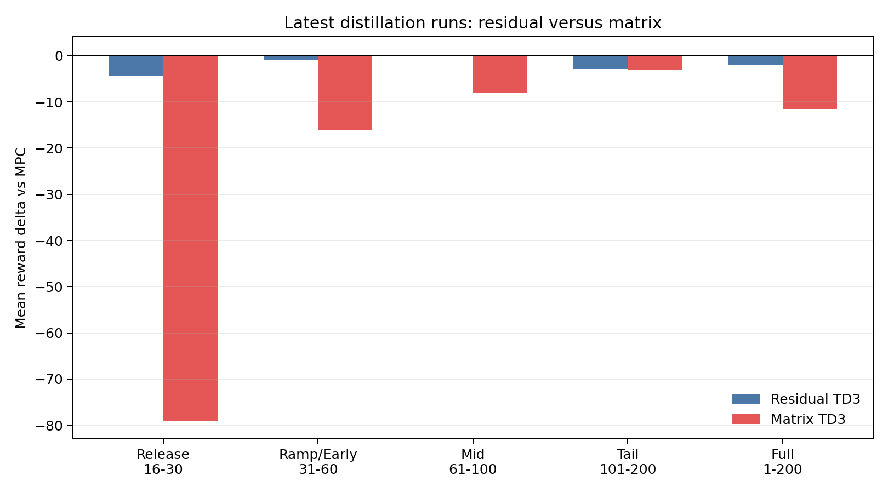
| Distillation method | Window | Mean reward delta | Win rate | Interpretation |
|---|---|---|---|---|
| Residual TD3 | 16-30 release | -4.3296 | 0.0% | Release is bad, but not catastrophic. |
| Residual TD3 | 31-60 early | -0.9111 | 3.3% | Recovers partially. |
| Residual TD3 | 61-100 mid | +0.1669 | 62.5% | Briefly beats MPC. |
| Residual TD3 | 101-200 tail | -2.8401 | 23.0% | Degrades again late. |
| Residual TD3 | 1-200 full | -1.8480 | 28.0% | Safer than matrix, but still not acceptable. |
| Matrix TD3 before steps | 16-30 release | -79.0156 | 0.0% | Severe release crash. |
| Matrix TD3 before steps | 31-60 early | -16.1642 | 0.0% | Recovery begins but remains far below MPC. |
| Matrix TD3 before steps | 61-100 mid | -8.0946 | 0.0% | Still much worse than MPC. |
| Matrix TD3 before steps | 101-200 tail | -3.0208 | 5.0% | Tail recovers but still loses. |
| Matrix TD3 before steps | 1-200 full | -11.4801 | 5.5% | Not transferable without protection. |
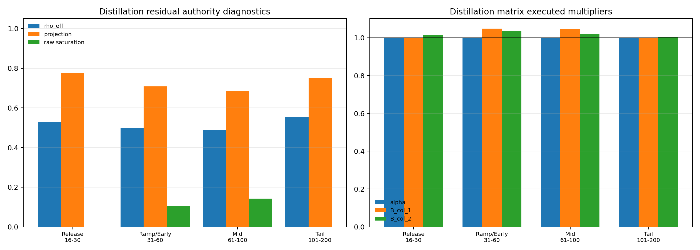
The residual run is safer because the rho authority layer strongly reduces the executed residual move:
| Residual diagnostic | Full-run mean | Live episodes 16-200 | Tail episodes 101-200 |
|---|---|---|---|
projection_due_to_authority_log |
67.56% | 73.03% | 74.86% |
rho_eff_log |
0.5239 | 0.5285 | 0.5533 |
rho_log |
0.4049 | 0.4106 | 0.4416 |
The actor is often asking for larger residual authority than the safety layer allows. In the tail, the raw residual action tends toward negative residual on input 1 and positive residual on input 2, but the executed residual is much smaller:
| Residual signal, tail 101-200 | Input 1 mean | Input 2 mean |
|---|---|---|
| Raw residual action | -0.4090 | +0.7933 |
| Executed residual action | -0.0178 | +0.0123 |
| Raw residual input correction | -0.0204 | +0.0397 |
| Executed residual input correction | -0.00089 | +0.00062 |
So residual authority is doing its safety job, but the method still does not learn a durable performance improvement. It briefly helps in episodes 61-100, then becomes worse again.
The matrix run is more alarming because it crashes even though A was already tight:
| Distillation matrix multiplier bounds | Low | High |
|---|---|---|
alpha |
0.99 | 1.01 |
B_col_1 |
0.75 | 1.25 |
B_col_2 |
0.75 | 1.25 |
The latest matrix run has almost no raw action saturation (action_saturation_trace mean about 0.0003). Therefore the failure is not simply "the policy hits the raw action boundary." Distillation is sensitive enough that moderate B movement inside the allowed range can still produce a very poor MPC decision. This matches the earlier user observation: tight A, wide B, and low exploration noise still degraded heavily.
The latest residual run has a different failure mode from the matrix run. It does not collapse catastrophically. Instead, it improves briefly in episodes 61-100, then loses performance again in episodes 101-200.
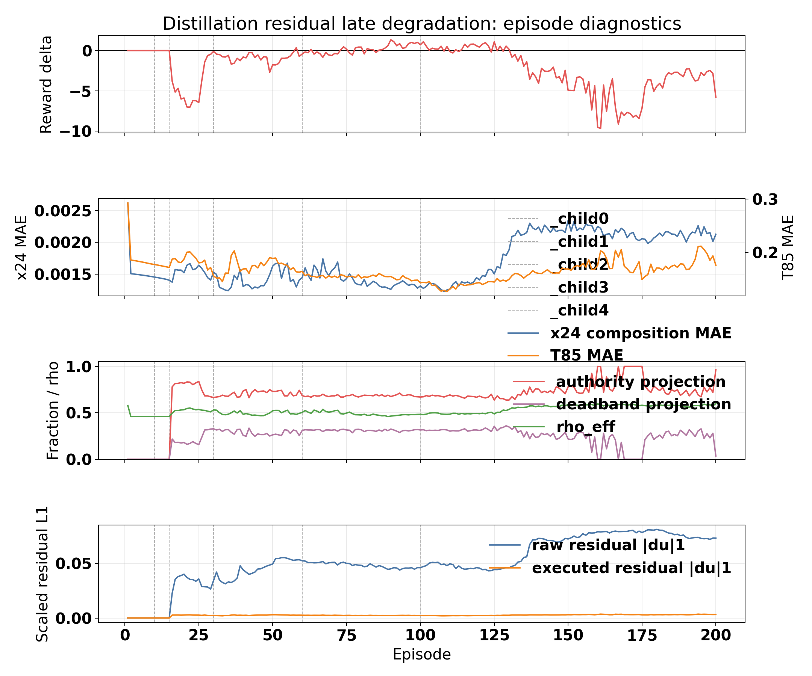
The important window comparison is:
| Window | RL reward | MPC reward | Reward delta | x24 MAE | T85 MAE | Reward bonus | Inside-band weight | Move penalty |
|---|---|---|---|---|---|---|---|---|
| 16-30 release | 13.8154 | 18.1450 | -4.3296 | 0.001544 | 0.1838 | 16.7354 | 0.7028 | 0.4958 |
| 31-60 early | 16.7218 | 17.6329 | -0.9111 | 0.001406 | 0.1731 | 19.8411 | 0.7101 | 0.6421 |
| 61-100 mid | 17.9100 | 17.7431 | +0.1669 | 0.001412 | 0.1541 | 20.8187 | 0.7157 | 0.6055 |
| 101-200 tail | 14.9184 | 17.7585 | -2.8401 | 0.001939 | 0.1637 | 18.5200 | 0.6915 | 0.6644 |
The late degradation is mostly a tracking-quality and reward-bonus problem, not only an input-move problem. From the good mid window to the bad tail window:
0.001412 to 0.001939.0.1541 to 0.1637, but it remains better than the release window.20.8187 to 18.5200;0.7157 to 0.6915;0.6055 to 0.6644.So the tail loss is driven by the controller moving farther from the reward's high-bonus tracking region. The x24 composition output matters a lot here because the distillation reward weights composition strongly (Q1 = 3.7e4 in the current reward defaults).
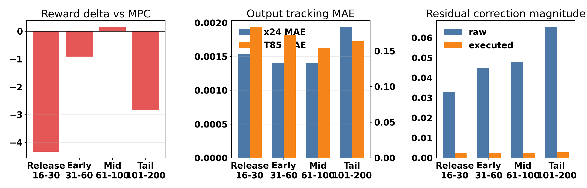
The residual authority logs show why the policy does not turn this into a useful correction:
| Window | Authority projection | Deadband projection | rho_eff |
Raw residual L1 | Executed residual L1 | Raw input-2 action | Executed input-2 action |
|---|---|---|---|---|---|---|---|
| 16-30 release | 77.5% | 22.0% | 0.5288 | 0.03314 | 0.00259 | -0.2021 | -0.0046 |
| 31-60 early | 70.9% | 28.7% | 0.4965 | 0.04503 | 0.00256 | +0.4677 | +0.0126 |
| 61-100 mid | 68.4% | 31.1% | 0.4904 | 0.04805 | 0.00236 | +0.5280 | +0.0097 |
| 101-200 tail | 74.9% | 24.7% | 0.5533 | 0.06540 | 0.00277 | +0.7933 | +0.0123 |
The raw policy request gets more aggressive in the tail. The raw residual magnitude rises from 0.04805 in the mid window to 0.06540 in the tail, and the raw second-input action rises from +0.5280 to +0.7933. But the executed residual remains tiny because the authority layer clips it. In the tail, the raw residual correction is approximately:
| Tail residual signal | Input 1 | Input 2 |
|---|---|---|
| Raw residual correction | -0.02035 | +0.03969 |
| Executed residual correction | -0.00089 | +0.00062 |
This means the actor is increasingly asking for a correction that the authority system refuses to execute. The plant sees a very small correction, while the policy continues to move toward a larger raw correction. This is a projection mismatch in the learning problem.
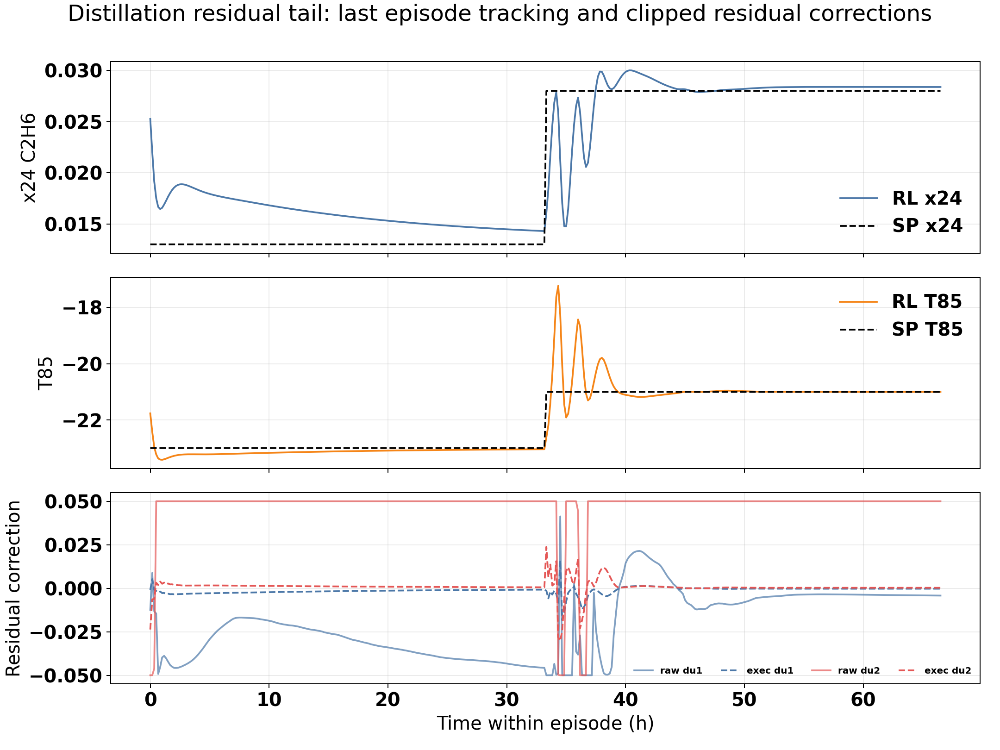
The episode-level correlations support the same diagnosis:
| Episode metric, episodes 16-200 | Correlation with reward delta |
|---|---|
| Reward bonus term | +0.970 |
| Inside-band weight | +0.738 |
| x24 MAE | -0.693 |
| T85 MAE | -0.641 |
| Executed residual L1 | -0.779 |
rho_eff |
-0.786 |
| Authority projection fraction | -0.888 |
| Raw residual L1 | -0.599 |
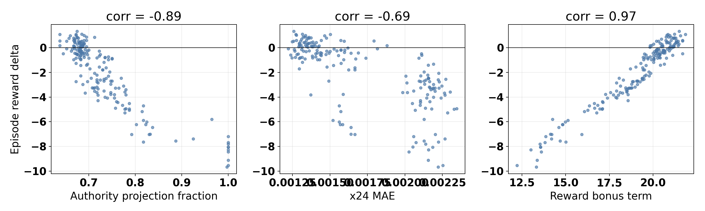
The strongest negative correlation is authority projection. This does not mean projection itself is bad; projection is preventing unsafe residual moves. It means episodes where the actor fights the projection layer are also episodes where the residual method loses to MPC. The residual policy is not learning a stable correction inside the executable authority envelope.
This connects directly to the matrix findings:
| Family | Safety layer behavior | Failure after safety layer |
|---|---|---|
| Matrix Step 3B | Nominal-cost tolerance allowed many candidates | Accepted candidates were not reliably plant-useful. |
Residual with rho authority |
Projection prevented large residual moves | Raw policy kept asking for mostly clipped corrections, and tail reward degraded. |
The shared lesson is: a safety filter is not enough unless the learning problem is aligned with the filtered action that the plant actually experiences.
For residual, the next fix should be projection-aware rather than simply widening authority. Widening rho or authority_beta_res could make the late tail worse because the raw policy is already pushing toward larger residuals. Better next candidates are:
| Candidate fix | Purpose |
|---|---|
| Add a projection penalty to the residual reward, such as `-lambda_proj | |
Add a raw-action magnitude penalty when projection_due_to_authority = 1. |
Keep the actor inside the executable authority envelope. |
Train the actor through a projection-aware action, or add behavior-cloning pressure toward executed_action_raw_log when projection is active. |
Reduce the off-manifold gap between actor output and replayed executed action. |
Add a tail monitor: if authority projection stays above 70% for a window, freeze residual authority or fall back to MPC residual zero for that window. |
Prevent late drift from damaging the run after a good mid-window recovery. |
The immediate conclusion for distillation residual is: keep rho authority, but do not treat high projection as harmless. Persistent projection is now a diagnostic signal that the residual policy is outside the useful action envelope.
The current reward is not the only possible judgment of "good enough." To test whether the latest residual and matrix runs are intrinsically bad or mainly bad under the current shaped reward, I re-scored the saved trajectories under 10 reward candidates. The trajectories are fixed; only the reward calculation changes. The MPC reference trajectory is the canonical distillation fluctuation baseline in Distillation/Data/mpc_results_disturb_fluctuation.pickle.
The pure quadratic candidate is:
The 10 reward candidates are:
| Candidate | Definition |
|---|---|
| Current bonus | Current distillation reward: relative tracking bands, linear inside/outside terms, and bonus beta = 7. |
| Pure quad Q/R | Pure quadratic with current Q = [3.7e4, 1.5e3] and R = [2.5e3, 2.5e3]. |
| Pure quad output only | Pure quadratic with current Q, but R = 0. |
| No bonus | Current reward shape with beta = 0. |
| Low bonus | Current reward shape with beta = 3. |
| High bonus | Current reward shape with beta = 12. |
| Half x24 Q | Current reward shape with x24 composition weight halved to 1.85e4. |
| Double x24 Q | Current reward shape with x24 composition weight doubled to 7.4e4. |
| Low move R | Current reward shape with input-move penalty reduced to R = [250, 250]. |
| High move R | Current reward shape with input-move penalty increased to R = [1.25e4, 1.25e4]. |
The normalized reward delta below is RL - MPC, divided by the mean absolute MPC reward under the same candidate. Positive means the RL run scores better than MPC under that reward definition.
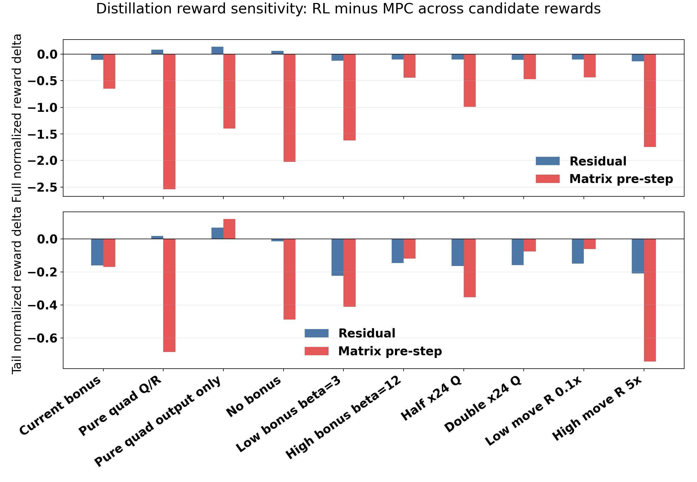
| Reward candidate | Residual full | Residual tail | Matrix full | Matrix tail |
|---|---|---|---|---|
| Current bonus | -0.104 | -0.160 | -0.647 | -0.170 |
| Pure quad Q/R | +0.087 | +0.018 | -2.542 | -0.685 |
| Pure quad output only | +0.140 | +0.069 | -1.399 | +0.121 |
| No bonus | +0.061 | -0.014 | -2.026 | -0.490 |
| Low bonus | -0.120 | -0.224 | -1.624 | -0.411 |
| High bonus | -0.101 | -0.147 | -0.441 | -0.119 |
| Half x24 Q | -0.100 | -0.164 | -0.990 | -0.353 |
| Double x24 Q | -0.106 | -0.158 | -0.471 | -0.076 |
| Low move R | -0.098 | -0.151 | -0.437 | -0.061 |
| High move R | -0.136 | -0.209 | -1.747 | -0.743 |
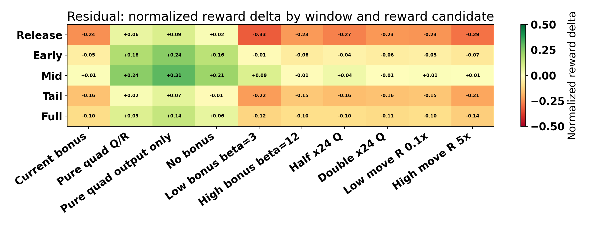
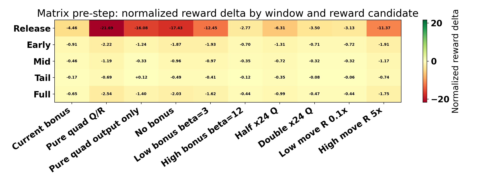
This changes the interpretation:
The physical metrics make this clearer:
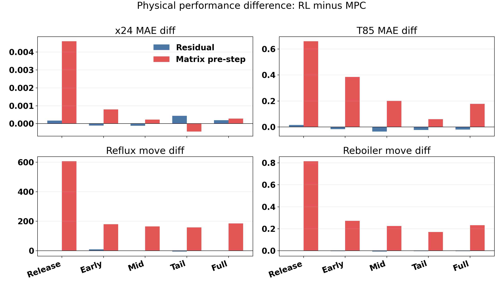
| Method | Window | x24 MAE difference | T85 MAE difference | Reflux move difference | Reboiler move difference |
|---|---|---|---|---|---|
| Residual | Full | +0.000193 | -0.0201 | -2.13 | -0.00370 |
| Residual | Tail | +0.000440 | -0.0227 | -6.28 | -0.00316 |
| Matrix pre-step | Full | +0.000288 | +0.1772 | +184.63 | +0.23228 |
| Matrix pre-step | Tail | -0.000445 | +0.0596 | +158.53 | +0.17005 |
For residual, the tradeoff is plausible: it improves T85 and uses less input movement, but it worsens x24 composition enough that the current bonus-based reward rejects it. This suggests the residual method may be closer to useful than the current reward delta suggests.
For matrix, the tradeoff is less acceptable: the tail composition improvement is real, but the full-run release damage, worse temperature tracking, and much larger input movement mean it is not ready. The matrix run is a useful diagnostic, not a deployable policy.
The reward-sensitivity conclusion is:
| Method | Is it "good enough" under some reasonable reward? | Practical decision |
|---|---|---|
| Residual | Maybe. Pure quadratic and no-bonus rewards show useful behavior, but current reward exposes tail composition loss. | Keep investigating; add projection-aware learning and reconsider reward bonus strength. |
| Matrix pre-step low-noise | Not over the full run. Only the tail composition result is promising under output-only scoring. | Do not transfer as-is; use Step 2 release protection and Step 3C shadow diagnostics before any distillation matrix rerun. |
This also means the current distillation reward may be too bonus-sensitive for residual analysis. It is doing something useful: it catches the late x24 loss. But it can hide useful temperature/input improvements. For the next residual analysis, report both:
That will separate "the controller is physically worse" from "the controller violates the current bonus-shaped preference."
The next improvement should not be "increase Step 3B tolerance." The scalar polymer run already shows that allowing more candidates can make performance worse. The next improvement should separate three concepts:
| Layer | Current behavior | Problem | Next change |
|---|---|---|---|
| Step 2 release guard | Clips multiplier authority during release | Useful; should stay | Keep enabled for matrix and structured polymer. |
| Step 3 nominal trust region | Accepts candidates close to nominal cost | Safety-only; not enough for performance | Convert to shadow logging or add a benefit test. |
| Performance acceptance | Not implemented | Candidate may be safe-ish but not useful | Add a candidate-benefit test before fallback is allowed to shape training. |
The most useful next version is Step 3C: a dual-cost shadow gate. It should log two quantities before we use it for fallback:
| Quantity | Meaning |
|---|---|
nominal_penalty = J(U_t^{cand}; A_0,B_0) - J(U_t^{nom}; A_0,B_0) |
How much safety budget the candidate consumes under the nominal model. |
candidate_advantage = J(U_t^{nom}; A_t^{cand},B_t^{cand}) - J(U_t^{cand}; A_t^{cand},B_t^{cand}) |
Whether the candidate model predicts a meaningful benefit over the nominal input sequence. |
The candidate should only execute when it is both safe enough and useful enough:
For the next polymer experiment, I would not keep Step 3B active as a hard fallback during training. The evidence says:
Recommended next configuration for polymer:
| Setting | Recommended value |
|---|---|
| Step 1 diagnostic | on |
| Step 2 release guard | on |
| Step 3 fallback | off or shadow-only |
| Step 3C dual-cost logging | on |
| Distillation Step 2/3 | keep disabled until Step 3C is understood |
For distillation matrix, the latest pre-step run says Step 2-style release protection is necessary before any transfer. But the polymer Step 3B result says we should not transfer a simple nominal-cost fallback gate. Distillation should receive Step 2 release protection plus Step 3C shadow diagnostics first, not Step 3B hard fallback.
For distillation residual, the next question is different. Residual is already authority-limited by rho, but its tail still loses. That suggests a residual-specific improvement: use the rho/projection logs to decide when the residual policy is being mostly clipped and should stop training on its raw requested correction. In other words, residual may need executed-action replay plus a penalty for persistent authority projection, not a matrix-style multiplier cap.
This revisit separates two distillation matrix signals that should not be merged:
Distillation/Results/distillation_matrix_td3_disturb_fluctuation_mismatch_unified/20260425_082831/input_data.pkl is the tight-A TD3 mismatch run with Phase 1 hidden release. This is the relevant Step 2B evidence.Distillation/Results/distillation_matrix_sac_disturb_fluctuation_standard_unified/20260415_104840/input_data.pkl is the older SAC standard-state run with set_points_len = 100, warm_start = 5, and no Phase 1/Step 2B logs. It is useful context, but it is not a Step 2B test and should not be used as proof that Step 2B works or fails.The TD3 Step 2B result is clear: hidden release preserves the warm-start and freeze windows, but it does not protect the first live learned matrix policy.
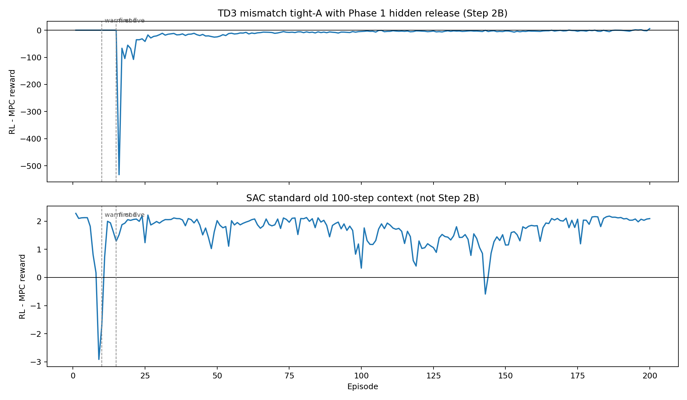
| Run | Window | Mean reward delta | Win rate | Interpretation |
|---|---|---|---|---|
TD3 tight-A Step 2B |
1-10 warm | -0.00002 | 30.0% | Hidden/nominal behavior matches MPC. |
TD3 tight-A Step 2B |
11-15 freeze | +0.00002 | 60.0% | Freeze still matches MPC. |
TD3 tight-A Step 2B |
16-30 first live | -79.0156 | 0.0% | First live matrix authority crashes badly. |
TD3 tight-A Step 2B |
31-60 early | -16.1642 | 0.0% | Recovery starts but remains far below MPC. |
TD3 tight-A Step 2B |
61-100 mid | -8.0946 | 0.0% | Still loses every episode. |
TD3 tight-A Step 2B |
101-200 tail | -3.0208 | 5.0% | Recovers but does not beat MPC. |
| SAC old 100-step context | 1-200 full | +1.6770 | 98.5% | Promising but not comparable to Step 2B: standard state, shorter blocks, no Phase 1 logs. |
The most important diagnostic is that the TD3 crash is not caused by extreme raw action saturation. During the first live window, the mean multipliers are still close to nominal:
| TD3 Step 2B window | Mean alpha | Mean B_col_1 | Mean B_col_2 | Raw near-bound fraction | Mean |raw action| |
|---|---😐---😐---😐---😐---😐
| 1-10 warm | 1.0000 | 1.0000 | 1.0000 | 0.0% | 0.0000 |
| 11-15 freeze | 1.0000 | 1.0000 | 1.0000 | 0.0% | 0.0058 |
| 16-30 first live | 1.0017 | 0.9973 | 1.0153 | 9.5% | 0.4049 |
| 31-60 early | 0.9987 | 1.0486 | 1.0368 | 4.4% | 0.3451 |
| 101-200 tail | 1.0002 | 0.9990 | 1.0023 | 3.1% | 0.2119 |
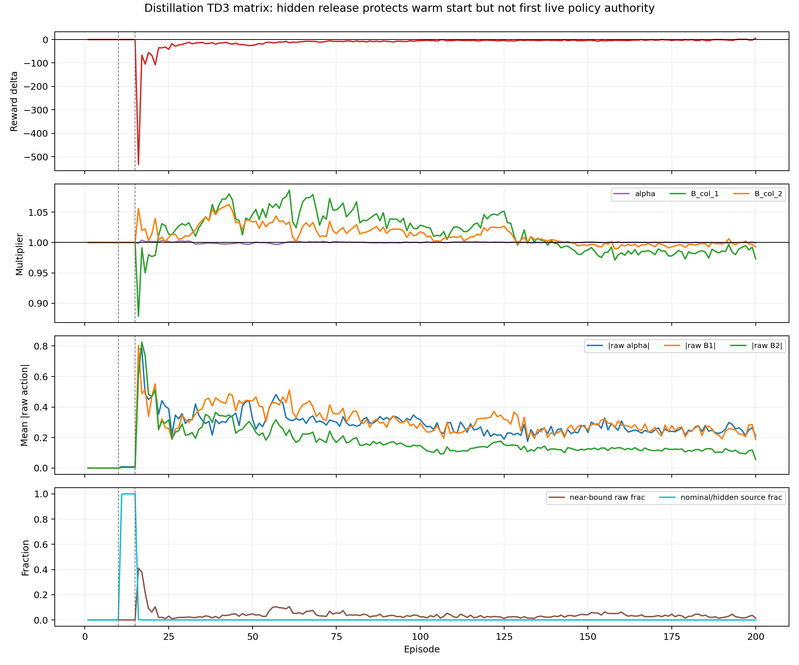
This changes the diagnosis. For polymer, early failure often looked like boundary-seeking authority. For distillation, even small or moderate B movement can be destructive because the MPC move allocation is highly sensitive. Step 2B only delays the handoff; it does not make the first learned policy stay close enough to the nominal behavior or prove that its B correction is useful.
The SAC 100-step run should be kept as a clue, not a conclusion. It says the matrix family is not intrinsically impossible for distillation. But because it used set_points_len = 100, state_mode = "standard", warm_start = 5, and no hidden-release/fallback instrumentation, it cannot answer the current Step 2B question. The fair next comparison is to rerun SAC after the default fix to set_points_len = 200 and with the same mismatch-state and release instrumentation as TD3.
The latest polymer Step 3B run confirms the user's concern about the method. The tolerant gate accepted many candidates, but performance did not recover the Step 2-only benefit:
| Polymer Step 3B window | Reward delta | Accepted | Fallback | Mean policy/executed multiplier distance |
|---|---|---|---|---|
| 16-30 first live | -0.1976 | 48.5% | 51.5% | 0.3274 |
| 31-60 early | -0.1202 | 51.4% | 48.6% | 0.2781 |
| 61-100 mid | -0.0919 | 48.7% | 51.3% | 0.2545 |
| 101-200 tail | +0.0088 | 44.3% | 55.7% | 0.2351 |
| 1-200 full | -0.0468 | 50.7% | 49.3% | 0.2347 |
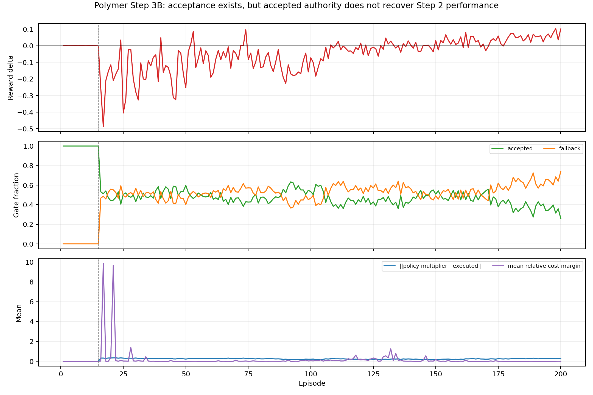
So Step 3B did not fail because it rejected everything. It failed because nominal-cost closeness is only a safety test. It can accept candidates that are close to nominal under the linear nominal objective but still not useful on the nonlinear plant.
Online behavioral cloning is a better next direction than simply increasing Step 3B tolerance, but it should be execution-aware. The actor should not clone every action it ever requested; it should learn from the action that the safety layer actually executed.
For matrix multipliers, define the normalized nominal action:
Let a_exec be the final normalized action after release clipping, fallback, or projection. During the handoff, use:
The two BC terms serve different purposes:
| Term | When active | Purpose |
|---|---|---|
| Nominal BC | Warm start, freeze, and early live release | Prevent the first live policy from leaving MPC support too quickly. |
| Executed-action BC | When release clipping, fallback, or projection changes the action | Make the actor learn the same action envelope the plant actually experiences. |
For online use, the BC target should be filtered:
A practical next test is therefore not "Step 3B with higher tolerance." It is:
| Setting | Next value |
|---|---|
| Step 2 release guard | on |
| Step 3B hard fallback | off or shadow-only |
| Step 3C dual-cost logging | on |
| Online BC nominal anchor | on for episodes 11-30, then decay |
| Online BC executed-action anchor | on whenever a_policy != a_exec |
| BC decay | start with 10-20 subepisodes |
Distillation B BC weight |
higher than A BC weight for the first test |
This directly targets both observed failures:
B movement is small enough to look harmless but large enough to damage the Aspen closed loop.Step 4 is the shared behavioral-cloning handoff surface for the matrix and structured_matrix supervisors. The design split is:
| Layer | Responsibility |
|---|---|
| Runner | Build the BC schedule from warm start and subepisode length, expose the nominal target action, and log BC diagnostics at env-step resolution. |
| Agent | Add the BC penalty to the actor loss during the active handoff window and report BC metadata from train_step(). |
The Step 4 implementation is intentionally narrow:
For polymer, Step 4 starts with a BC-only isolation run. The earlier matrix-step protections are disabled on purpose:
| Polymer matrix-family setting | New default |
|---|---|
post_warm_start_action_freeze_subepisodes |
0 |
post_warm_start_actor_freeze_subepisodes |
0 |
offline_multiplier_diagnostics.enabled |
False |
release_protected_advisory_caps.enabled |
False |
mpc_acceptance_fallback.enabled |
False |
behavioral_cloning.enabled |
True |
This is the right isolation. Otherwise a polymer rerun could improve or degrade for three different reasons at once: hidden release, clipped authority, or actor regularization.
The chosen first BC target is the normalized nominal raw action:
For TD3 matrix and structured matrix, the actor loss becomes:
For SAC matrix and structured matrix, the BC penalty is applied to the deterministic policy mean:
The first implemented Step 4 schedule used an exponential-shaped decay over the first 10 post-warm-start subepisodes:
That first schedule was enough to preserve late scalar benefit, but it was not strong enough to protect the first live polymer handoff. The current Step 4 defaults now strengthen the nominal anchor:
| Polymer Step 4 default | active_subepisodes |
lambda_bc_start |
lambda_bc_end |
Why |
|---|---|---|---|---|
| Scalar matrix | 20 | 0.3 | 0.0 | Keep BC active deeper into the early live window and make the nominal anchor materially stronger than the original 0.1 start. |
| Structured matrix | 25 | 0.6 | 0.0 | Give structured mode a stronger and longer anchor because the 6-D action space stayed much farther from nominal than scalar mode. |
Distillation still keeps the same Step 4 surface disabled by default.
The target remains nominal_only for the first pass. That is why replay stays unchanged. The BC target is global for the active handoff window, so the actor can receive it directly from the runner during train_step() without storing per-transition clone targets.
The expected diagnostics for the next Step 4 polymer rerun are:
| Diagnostic | Meaning |
|---|---|
bc_active_log |
Whether the env step is inside the BC handoff window. |
bc_weight_log |
The scheduled BC weight at that step. |
bc_loss_log |
The BC penalty reported by actor-update steps. |
bc_actor_target_distance_log |
Mean actor-output distance to the nominal target during actor updates. |
bc_policy_nominal_distance_log |
Raw action distance from the current policy request to the nominal raw action. |
The next Step 4 readout should compare three things on polymer:
For distillation, the same BC surface should stay off by default until polymer shows whether actor anchoring helps without masking all useful matrix authority.
This update uses the latest polymer BC-only runs:
Polymer/Results/td3_multipliers_disturb/20260427_185932/input_data.pklPolymer/Results/disturb_compare_td3_multipliers/20260427_185946/input_data.pklPolymer/Results/td3_structured_matrices_disturb/20260427_190030/input_data.pklPolymer/Results/disturb_compare_td3_structured_matrices/20260427_190047/input_data.pklFirst, this really is a BC-only handoff test. The saved configs and logs show that the earlier matrix-step protections were inactive:
| Method | BC enabled | Release caps enabled | Acceptance/fallback enabled | Action freeze subepisodes | Actor freeze subepisodes | Release clipping steps | Fallback steps | Candidate-executed max diff |
|---|---|---|---|---|---|---|---|---|
| Scalar matrix | True |
False |
False |
0 | 0 | 0 | 0 | 0.0 |
| Structured matrix | True |
False |
False |
0 | 0 | 0 | 0 | 0.0 |
So the plant saw exactly the BC-only executed multipliers. There was no hidden release clip, no Step 3 fallback, and no warm-start freeze after episode 10. That also means the first relevant handoff window moves earlier than in the older runs. For the BC-only run, the right first-live comparison window is episodes 11-20, not 16-30.
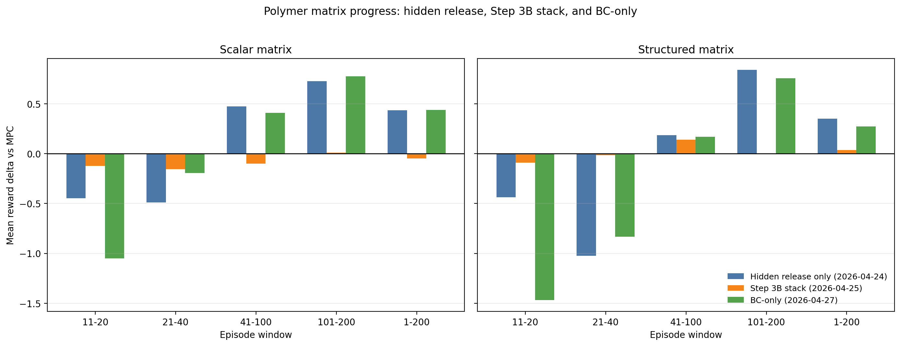
| Method | Variant | 11-20 delta | 21-40 delta | 41-100 delta | 101-200 delta | 1-200 delta | 1-200 win rate |
|---|---|---|---|---|---|---|---|
| Scalar matrix | Hidden release only, 2026-04-24 | -0.4473 | -0.4895 | +0.4749 | +0.7251 | +0.4337 | 81.5% |
| Scalar matrix | Step 3B stack, 2026-04-25 | -0.1226 | -0.1538 | -0.0991 | +0.0088 | -0.0468 | 37.5% |
| Scalar matrix | BC-only, 2026-04-27 | -1.0497 | -0.1925 | +0.4076 | +0.7757 | +0.4384 | 84.5% |
| Structured matrix | Hidden release only, 2026-04-24 | -0.4361 | -1.0237 | +0.1841 | +0.8394 | +0.3507 | 74.5% |
| Structured matrix | Step 3B stack, 2026-04-25 | -0.0907 | -0.0165 | +0.1407 | -0.0003 | +0.0359 | 54.0% |
| Structured matrix | BC-only, 2026-04-27 | -1.4678 | -0.8323 | +0.1687 | +0.7569 | +0.2724 | 75.0% |
The scalar BC-only run is mixed but useful:
The structured BC-only run is weaker:
+0.7569 in episodes 101-200),So the latest polymer evidence says: BC-only is not yet a release-safety replacement. It can preserve late learning, especially for scalar matrix, but by itself it does not smooth the first live handoff enough.
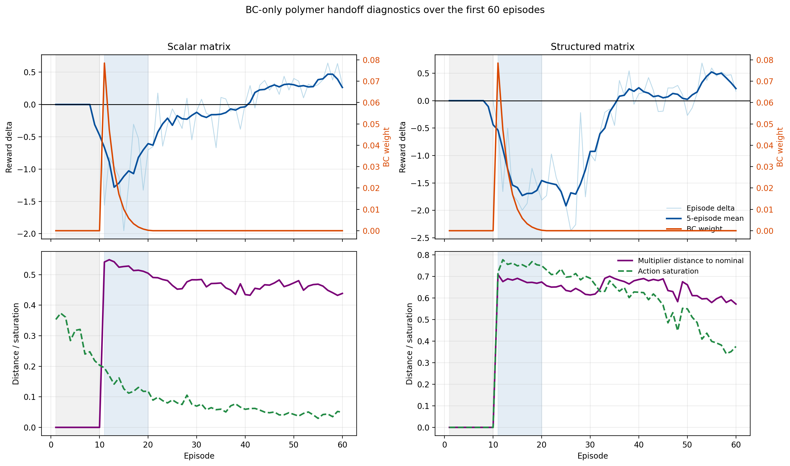
The diagnostics explain why. The BC schedule decays quickly, and the policy still moves far from nominal during the active BC window:
| Method | Window | Mean BC weight | Mean policy-nominal distance | Mean actor-target distance | Mean multiplier distance | Mean action saturation |
|---|---|---|---|---|---|---|
| Scalar matrix | 11-20 | 0.0193 | 1.0686 | 1.1311 | 0.5256 | 0.1391 |
| Scalar matrix | 21-40 | 0.0000 | 1.1138 | 1.1002 | 0.4683 | 0.0745 |
| Scalar matrix | 101-200 | 0.0000 | 1.2096 | n/a | 0.3649 | 0.0378 |
| Structured matrix | 11-20 | 0.0193 | 1.8262 | 1.8789 | 0.6820 | 0.7538 |
| Structured matrix | 21-40 | 0.0000 | 1.9707 | 1.9798 | 0.6565 | 0.6737 |
| Structured matrix | 101-200 | 0.0000 | 2.0442 | n/a | 0.6553 | 0.5008 |
Two facts matter here:
0.1, but the episode-window mean is only 0.0193 because the decay runs to zero over the first 10 post-warm-start subepisodes.The structured action-space result is especially important for the next iteration. Even with a nominal anchor, the structured actor is still using a high-authority off-nominal policy during the handoff.
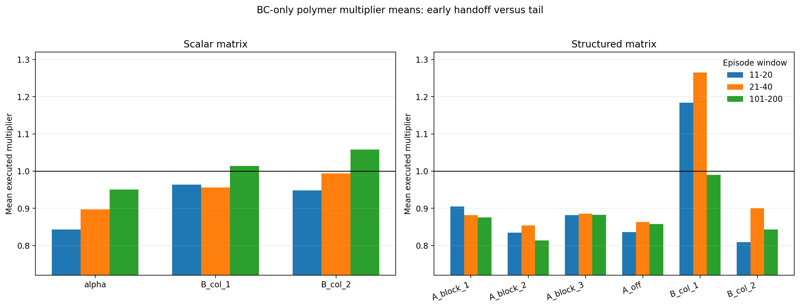
The mean multipliers confirm that BC is not holding the executed policy close to theta = 1 during the early handoff:
11-20: alpha = 0.8427, B_col_1 = 0.9638, B_col_2 = 0.9481;101-200: alpha = 0.9503, B_col_1 = 1.0141, B_col_2 = 1.0580;11-20: A_block_1 = 0.9049, A_block_2 = 0.8347, A_block_3 = 0.8816, A_off = 0.8360, B_col_1 = 1.1839, B_col_2 = 0.8088;21-40: B_col_1 rises further to 1.2653, while B_col_2 = 0.9003;101-200: B_col_1 returns near nominal, but the A-side multipliers still remain well below 1.So the current polymer BC-only result should be read as follows:
| Finding | Conclusion |
|---|---|
Scalar BC-only full run is slightly better than the older hidden-release scalar baseline (+0.4384 versus +0.4337). |
BC can preserve or slightly improve late scalar learning quality. |
| Scalar BC-only first live window is much worse than either hidden release or Step 3B. | BC-only is not a safer handoff yet. |
Structured BC-only tail is still strong, but full-run reward is lower than the older structured hidden-release baseline (+0.2724 versus +0.3507). |
The current structured BC anchor is too weak to replace the earlier handoff logic. |
| Candidate and executed multipliers are identical at every step. | The early losses and late gains are genuine BC-only behavior, not masked by a clip or fallback layer. |
The practical next step is therefore narrower than enable BC everywhere:
The polymer evidence now supports online BC as a useful direction, but not yet as a complete replacement for release protection.
The first BC-only polymer readout says the anchor disappears too quickly. The direct fix is a longer BC window so the actor is still regularized after the first few post-warm-start episodes.
This is now implemented in polymer defaults:
active_subepisodes: 10 -> 20active_subepisodes: 10 -> 25The reason for the longer structured window is empirical: the structured actor remained far from nominal for longer and did so in a larger action space.
The original lambda_bc_start = 0.1 was too small in practice. Over episodes 11-20, the effective mean BC weight was only about 0.0193, which was not enough to keep the first live policy close to nominal.
This is now implemented in polymer defaults:
lambda_bc_start: 0.1 -> 0.3lambda_bc_start: 0.1 -> 0.6This keeps the change simple: make the anchor stronger before adding a new target or a new safety-learning interaction.
Structured mode needs extra care because it controls six raw action dimensions instead of three. The first BC-only run showed:
B usage.So Step 4 now treats structured mode as a separate polymer handoff case rather than assuming the scalar BC strength is transferable. The current structured defaults use both a larger start weight and a longer active window.
This is not yet full per-dimension normalization inside the loss. It is a stronger structured default schedule chosen to match the larger and more aggressive structured action surface.
If the stronger structured schedule still leaves large first-live losses, the next tighter move should be coordinate-specific BC rather than one more global increase.
The main idea is:
B directions during handoff,A directions,This should be the first refinement after the current stronger-default rerun if structured mode is still the weak case.
Executed-action BC is not the first fix for the current polymer BC-only run because, in that run, the plant saw the same action the policy requested. But it is the important next Step 4 extension once a safety layer is back in the loop.
Executed-action BC means:
That is the right next transfer step for distillation after polymer validates the stronger nominal-only handoff.
The last Step 4 option is to put the safety layers back only after the actor is already behaving better under the stronger nominal anchor.
That means:
This ordering matters. If guarded execution is restored too early, it becomes hard to tell whether a better result came from a better actor or from a stronger external clamp.
The user-reported distillation behavior has the same shape as the polymer release problem, but worse: tight A, wide B, exploration noise 0.01, and smoothing noise 0.01 still caused a heavy degradation, then recovery after about 100 episodes, and the final result still did not beat MPC.
The polymer result says the important split is:
B directions can remain dangerous even when A is tight.For distillation, this means the first transfer should not be "copy polymer's wide bounds." The safer transfer is:
B authority.Distillation likely needs Step 3 after Step 2: an MPC acceptance or fallback gate. The reason is that the distillation run recovered but did not beat MPC, so protecting the first release dip may not be sufficient. The gate should accept the RL-assisted model only when a short nominal-cost or one-step prediction-health test is better than the nominal model; otherwise, execute nominal MPC for that decision.
The cap should not be calculated from one scalar rule. Use a two-layer rule:
For scalar matrix multipliers:
The A high cap has a clean analytical first pass:
rho Means In this report, rho(A) means the spectral radius of the matrix A. It is not the residual-authority rho used in some residual notebooks. Here it is only a matrix-stability quantity.
For a discrete-time linear prediction model,
The eigenvalues of A are the natural modes of the model. They are computed from:
If the eigenvalues are:
then the spectral radius is:
For a complex eigenvalue, the magnitude is:
For a discrete-time physical model, rho(A) < 1 means the unforced physical-state prediction decays instead of growing. We calculate this on the physical A block, A0_phys, not on the full offset-free augmented matrix, because the augmented disturbance/integrator states intentionally include unit eigenvalues.
For the scalar matrix multiplier,
Scaling a matrix by alpha scales every eigenvalue by alpha:
Therefore:
If we require the candidate model to stay below a target spectral radius,
then for positive alpha:
That is the origin of the cap formula. With rho_target = 1:
For structured matrix updates, there is no scalar shortcut unless every physical A entry is scaled by the same alpha. The calculation becomes direct:
So for structured candidates we build A_theta_phys, compute its eigenvalues, take their magnitudes, and keep the largest magnitude.
Using rho_target = 1 gives the currently documented values:
| System | rho(A0_phys) |
1 / rho(A0_phys) |
Interpretation |
|---|---|---|---|
| Polymer | 0.9464 | 1.0566 | Less open-loop spectral margin, but the matrix policy still found useful corrections in the wide A,B search. |
| Distillation | 0.8383 | 1.1929 | More open-loop spectral margin, but much less tolerance to wrong closed-loop gain corrections. |
For B, there is no equivalent spectral-stability cap. B caps must come from finite-horizon gain trust, actuator headroom, prediction-error checks, and closed-loop baseline non-regression.
The polymer result should be read carefully. The first important polymer lesson is that the direct matrix method could benefit from a wide A,B search: the successful matrix policy learned a useful low-dimensional model correction instead of being harmed permanently by the larger authority. The later capped reruns then showed that adding an A safety cap can keep the same family in a cleaner admissible region. So polymer is not proof that "tight A is the only working design"; it is proof that polymer can tolerate and exploit wider model authority when the learned correction points in a useful direction.
| Polymer run | Final test phys MAE | Final test reward | A drift |
B drift |
Spectral p95 |
|---|---|---|---|---|---|
| Matrix first capped | 0.1487 | -3.5844 | 0.1132 | 0.2146 | 1.0000 |
| Matrix latest capped | 0.1519 | -3.5773 | 0.0952 | 0.1563 | 0.9990 |
| Structured first capped | 0.2454 | -4.2549 | 0.1748 | 0.1893 | 1.1598 |
| Structured latest capped | 0.1551 | -3.5554 | 0.1788 | 0.1489 | 0.9999 |
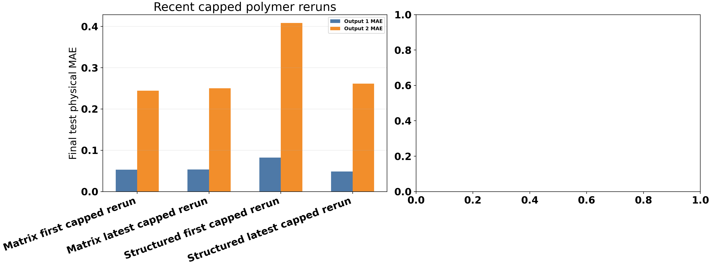
The distillation result changes the bottleneck diagnosis. Wide A and wide B was bad. Tight A with wide B was also bad. That comparison says the immediate failure is not mainly "the A multiplier made the model unstable." It says that distillation is sensitive to the finite-horizon input-output gain and input-allocation changes that remain after A has been tightened, especially the B direction.
The mathematical reason is that MPC does not optimize directly on rho(A). MPC optimizes on the finite-horizon input-output map:
Even if A is almost nominal, changing B changes every Markov block that the optimizer sees:
The first block, C(B_theta - B0), affects the predicted one-step output response immediately. In distillation, reflux and reboiler duty are strongly coupled, constrained, and reward-asymmetric. So a wrong B multiplier can make MPC believe the wrong input is more effective, or that an input has more headroom/effect than the Aspen plant actually gives. That can degrade the closed-loop decision even when:
This is why tight A plus wide B is still a bad distillation result: it removes the obvious A-stability explanation and leaves finite-horizon gain trust, input allocation, and reward alignment as the bottleneck. The next fix should be:
B authority release,The current scalar matrix path uses utils/multiplier_mapping.py to map normalized actor actions in [-1, 1] into asymmetric physical multiplier bounds. The nominal action maps to multiplier 1.0.
For scalar matrix updates, utils/matrix_runner.py applies:
For structured updates, utils/structured_model_update.py builds either a block or band multiplier family. The active distillation default is block mode:
In block mode, diagonal state groups are scaled by their own theta_A values, off-block couplings are scaled by theta_A_off, and each input column of B is scaled by its corresponding theta_B.
The current distillation config in systems/distillation/config.py sets:
| Quantity | Current value |
|---|---|
DISTILLATION_MATRIX_ALPHA_UPPER_CAP |
1.1929 |
DISTILLATION_MATRIX_ALPHA_DEFAULT_LOW |
0.99 |
DISTILLATION_MATRIX_ALPHA_DEFAULT_HIGH |
1.01 |
DISTILLATION_DEFAULT_MULTIPLIER_LOW |
0.75 |
DISTILLATION_DEFAULT_MULTIPLIER_HIGH |
1.25 |
The current distillation TD3 matrix defaults in systems/distillation/notebook_params.py now also use:
| TD3 field | Current value |
|---|---|
target_policy_smoothing_noise_std |
0.01 |
std_start |
0.01 |
std_end |
0.01 |
param_noise_std_start |
0.01 |
param_noise_std_end |
0.01 |
post_warm_start_action_freeze_subepisodes |
5 |
post_warm_start_actor_freeze_subepisodes |
5 |
That means the newest degradation is happening even after the first round of conservative release changes. In the active distillation matrix notebook output, the first several subepisodes stay at nominal multipliers, then the first live learned region degrades sharply. The visible output shows:
| Subepisode | Avg reward | Mean alpha |
Mean delta |
|---|---|---|---|
| 1 | 11.6800 | 1.0000 | [1.0000, 1.0000] |
| 2 | 17.6939 | 1.0000 | [1.0000, 1.0000] |
| 3 | 17.6866 | 1.0000 | [1.0000, 1.0000] |
| 4 | 17.6821 | 1.0000 | [1.0000, 1.0000] |
| 5 | 17.6792 | 1.0000 | [1.0000, 1.0000] |
| 6 | -1137.8245 | 0.9846 | [0.9851, 1.0105] |
| 7 | -915.3582 | 1.0695 | [0.9968, 0.9943] |
The active structured notebook output shows a similar pattern in a less extreme form: theta_A stays very close to 1.0, while theta_B moves more, and late visible rewards remain far below the nominal warm-start reward. This supports the diagnosis that the problem is not only A high instability. The learned policy is still finding model changes that are admissible but bad for closed-loop performance.
Both multiplier methods follow the same high-level idea:
The RL agent does not directly choose the plant input. The RL agent chooses a modified prediction model. MPC then solves its normal constrained optimization problem using that modified prediction model.
This is why the method is different from a residual controller. A residual controller adds a correction to the MPC input. A multiplier controller changes the model that MPC believes, then lets MPC choose the input under constraints.
At time t, the RL state contains the observer state, setpoint, current input, and optionally mismatch features:
The actor returns a normalized action:
Each action coordinate is clipped to [-1,1] and mapped around nominal multiplier 1.0. For lower bound ell_j and upper bound h_j:
So a_j = 0 means "use nominal model", a_j = -1 means "use lower cap", and a_j = 1 means "use upper cap." This centered mapping is important because the nominal action is always meaningful even when the low and high bounds are asymmetric.
After mapping, the runner builds a candidate prediction model:
MPC then solves:
Only the first input move is applied:
The nonlinear plant evolves, the reward is computed from scaled tracking error and input movement, and the transition is pushed to the replay buffer:
During test steps, the actor is evaluated without exploration. During training steps, TD3 or SAC updates from the replay buffer. In the TD3 path, the current Phase 1 hidden-release logic can execute the nominal action for several post-warm-start subepisodes while still evaluating/training the actor in the background.
The scalar matrix method uses one A multiplier and one B multiplier per manipulated input:
For the two-input polymer and distillation cases:
The candidate physical model is:
The augmented offset-free structure is preserved:
The current code uses the modified model for MPC prediction, but keeps the observer update on the nominal model. That means:
This is conservative: the learned model affects the optimizer's prediction, but the state estimator is not redesigned every time the actor changes a multiplier.
The scalar algorithm is:
Input:
nominal augmented model A0, B0, C
physical-state dimension n_phys
actor bounds low_coef, high_coef
observer state xhatdhat_t
previous input u_{t-1}
setpoint y_sp_t
At each step t:
1. Build RL state s_t.
2. If still in warm start or hidden release, use nominal raw action.
3. Otherwise get actor action a_t from TD3/SAC.
4. Map a_t to multipliers theta_t = [alpha_t, delta_t].
5. Build A_pred by multiplying the physical A block by alpha_t.
6. Build B_pred by multiplying each physical B input column by delta_{t,j}.
7. Put A_pred, B_pred into the MPC object.
8. Solve the constrained MPC optimization.
9. Apply the first input move to the nonlinear plant.
10. Update the nominal observer.
11. Compute reward and push the transition if this is a training step.
12. Train the agent after warm start.
The scalar method is low-dimensional and easy to interpret. Its main limitation is that it assumes all physical-state dynamics should be scaled by the same alpha. That is why it can work well when the useful correction is global, but it can be too blunt if only a subset of model couplings is wrong.
The structured method keeps the same RL-MPC loop but replaces the scalar model update with a structured model family. In block mode:
The physical states are partitioned into block groups:
For a physical A entry with row i and column j:
For the B matrix:
In band mode, the A multiplier depends on matrix distance from the diagonal:
Only configured offsets are scaled; unconfigured entries remain nominal. The augmented offset-free structure is still preserved exactly, so the disturbance identity block and zero coupling blocks are not changed.
The structured runner also has a stronger fallback path than the scalar runner. If the structured action is non-finite, invalid, violates preserved augmented structure, or causes an assisted MPC solve failure, the runner can replace the candidate prediction model with the nominal model:
The transition stored in replay uses the effective action, not the failed raw action, when fallback occurs. This matters because the critic should learn from the action that was actually executed through MPC.
The structured algorithm is:
Input:
nominal augmented model A0, B0, C
structured spec: block or band
per-coordinate low/high bounds
observer state xhatdhat_t
previous input u_{t-1}
setpoint y_sp_t
Before rollout:
1. Split A0, B0 into physical and offset-free disturbance blocks.
2. Resolve block groups or band offsets.
3. Build action labels and low/high bounds.
4. Build the nominal structured payload with all multipliers equal to one.
At each step t:
1. Build RL state s_t.
2. Use nominal raw action during warm start or hidden release.
3. Otherwise get actor action a_t from TD3/SAC.
4. Map a_t to structured multipliers theta_A,t and theta_B,t.
5. Build candidate A_pred, B_pred using block or band rules.
6. Validate finite values and preserved augmented structure.
7. Log candidate spectral radius, A Frobenius drift, B Frobenius drift, saturation, and near-bound fraction.
8. If candidate is invalid, fallback to nominal prediction model.
9. Solve MPC with candidate prediction model.
10. If the solve fails and fallback is enabled, solve again with nominal prediction model.
11. Apply the first input move to the nonlinear plant.
12. Update the nominal observer.
13. Compute reward and push the effective transition if this is a training step.
14. Train the agent after warm start.
Structured mode is more expressive than scalar matrix mode, but that expressiveness is exactly why it needs per-coordinate caps. A_block_j, A_off, B_col_1, and B_col_2 can have very different effects on the MPC prediction. A shared cap treats them as equally risky, which is usually false.
Both methods optimize the same outer RL objective:
But the action affects the reward indirectly:
This indirect path is the reason the method can be powerful and also fragile. A small multiplier can change the optimizer's predicted gain, which changes the selected input sequence. The plant never sees the multiplier directly; it only sees the input chosen by MPC after the multiplier has changed the prediction model.
A stability cap answers this question:
Will the candidate prediction model have acceptable open-loop physical-model poles?
The distillation failure asks a different question:
Will the candidate prediction model improve the closed-loop MPC decision under the real nonlinear plant, disturbance profile, reward scaling, and input constraints?
Those are not equivalent.
For scalar A, open-loop stability is easy:
so a positive upper bound can be computed directly. But even with alpha restricted to [0.99, 1.01], the finite-horizon input-output prediction can still change through B:
The MPC optimizer sees G_N, not only rho(A). A wide B range can change predicted move authority and input allocation while all poles remain stable. That is useful in polymer, but in distillation it can make the optimizer trust a gain correction that the Aspen plant does not reward.
The cap design therefore needs three levels:
A.A and B together.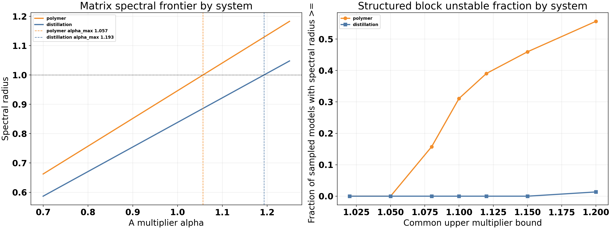
The existing cross-system admissibility figure shows why polymer and distillation split. Polymer needs the tight A cap because the nominal A is already close to the unit circle. Distillation has more open-loop spectral margin, but its saved and user-reported RL runs still degrade because admissible models can still be poor control models.
Use this procedure for both matrix and structured matrix. The difference is only the candidate generator.
For matrix:
For structured block mode:
The raw actor space can remain wide, but the effective model space should be filtered or gated before MPC receives it.
A Ceiling Choose a target spectral margin:
for routine closed-loop training, or rho_target = 1.0 only for a hard mathematical upper bound.
Then:
For polymer, rho(A0_phys) ~= 0.9464, so:
That is why the polymer A cap around 1.0566 is meaningful.
For distillation, rho(A0_phys) ~= 0.8383, so:
But the active distillation default is already much tighter than that:
So for distillation, the next improvement should not be "make A even tighter" unless diagnostics show A is still causing a specific issue. It should be "keep A tight near nominal, but add performance filters and B authority control."
For each candidate model, compute the finite-horizon Markov matrix:
Then define a gain-change ratio:
Use the MPC prediction horizon for N: polymer matrix currently uses predict_h = 9; distillation matrix uses predict_h = 6.
A practical initial rule:
Use 0.10 for distillation until the policy reliably beats MPC, because the latest distillation run shows that wide B authority still creates a bad release.
The B multiplier affects how much the MPC thinks each manipulated input can move the outputs. It should be capped by headroom:
If the candidate model repeatedly drives low headroom or large input moves, shrink the effective B range:
A first rule for distillation:
This is better than narrowing B permanently, because it keeps B available when the column has room and shrinks it when the optimizer is already near an actuator edge.
For each step, compare the candidate model against the nominal model before applying the candidate prediction model:
Accept the candidate only if:
If it fails, backtrack toward nominal:
until the candidate passes or lambda = 0, which recovers nominal MPC.
This is the missing piece in distillation. The current structured runner has a solve-failure fallback, but a solve can succeed while the closed-loop decision is still bad. Distillation needs a performance fallback, not only a numerical fallback.
For structured matrix, do not derive the cap only from the scalar matrix alpha, and do not assume every structured multiplier should share the same cap. Structured mode has several coordinates with different meanings, so it should eventually use per-coordinate caps.
In the current block mode, the action is:
The first three values scale within-block physical-state dynamics. theta_A_off scales cross-block coupling. The two B values scale the two manipulated-input columns. These are not equally risky:
A_block_j changes time-scale and local state-memory behavior for one state group.A_off changes coupling between state groups; it can be more delicate than a diagonal block because it changes interaction paths.B_col_j changes the predicted authority of one manipulated input; it directly changes MPC input allocation.In band mode, the same logic applies, but the coordinates are band offsets:
A_band0 is the main diagonal band, while higher bands are coupling bands. The higher bands should normally receive stricter caps until sensitivity scans show they are harmless.
The current code can already represent this. In utils/structured_model_update.py, a_low_override, a_high_override, b_low_override, and b_high_override can be scalars or arrays. A scalar means "same cap for every coordinate in that group"; an array means "different cap per multiplier." The report recommendation is to move from scalar overrides to array overrides after the first sensitivity scan.
Use log-multiplier coordinates because they make upward and downward moves comparable:
The nominal model is:
For each structured coordinate j, perturb only that coordinate:
Then build the two candidate models:
The spectral sensitivity of coordinate j is:
The finite-horizon gain sensitivity is:
If candidate rollouts are available, also compute a closed-loop cost sensitivity:
These three numbers answer different questions:
S_rho,j: does this multiplier move the prediction poles?S_G,j: does this multiplier change the MPC input-output map?S_J,j: does this multiplier change the actual closed-loop objective?The per-coordinate log authority should then shrink when a coordinate is sensitive:
Then:
For B coordinates, d_rho,j is usually ignored because B does not set open-loop stability. Use d_G,j, d_J,j, actuator headroom, and input-move diagnostics instead.
Convert the log authority back to multiplier bounds:
This gives different caps for every structured multiplier. A sensitive off-block or input column naturally receives a narrower interval than a harmless block.
Let:
be random or grid-sampled candidates from the raw range. For each candidate, compute:
Build the accepted set:
Then choose per-coordinate bounds from robust quantiles:
Combine the sensitivity and accepted-set caps:
Finally, test the worst corners and random joint combinations. Per-coordinate bounds are necessary but not sufficient, because two individually safe multipliers can still combine into an unsafe model. If the joint high corner fails, shrink the high quantile from 0.95 to 0.90, or shrink only the coordinate with the largest contribution to r_G.
For polymer, the successful wide matrix result means the plain scalar matrix family can tolerate wide A,B search. Structured is different because it perturbs several model substructures at the same time. A practical polymer structured starting point is:
| Coordinate type | Initial cap logic |
|---|---|
A_block_j |
use the scalar A cap as the first ceiling, then shrink blocks with high S_rho,j or S_G,j |
A_off |
start tighter than the block caps because it changes inter-block coupling |
B_col_j |
keep wider than A, but split by input-column sensitivity and headroom |
For distillation, the evidence says the cap should be even more coordinate-specific:
| Coordinate type | Initial distillation policy |
|---|---|
A_block_j |
keep near nominal unless sensitivity scan shows a specific block is harmless |
A_off |
keep very close to nominal at first because coupling changes can distort interaction dynamics |
B_col_1, B_col_2 |
do not force the same wide cap on both columns; cap each column by S_G,j, cost acceptance, and actuator headroom |
This matters because the latest distillation observation already tested tight A with wide B and still degraded. Therefore the next structured experiment should not ask "what is one cap for structured?" It should ask "which structured coordinate is causing the bad finite-horizon gain change?"
The existing polymer structured frontier supports this approach:
Structured A_high |
B_high |
Unstable frac | Near-unit frac | Spectral p95 | Spectral max |
|---|---|---|---|---|---|
| 1.0000 | 1.25 | 0.0000 | 0.0000 | 0.9337 | 0.9464 |
| 1.0400 | 1.25 | 0.0000 | 0.0158 | 0.9710 | 0.9842 |
| 1.0500 | 1.25 | 0.0000 | 0.0418 | 0.9781 | 0.9936 |
| 1.0566 | 1.25 | 0.0000 | 0.0770 | 0.9870 | 0.9998 |
| 1.0800 | 1.25 | 0.0655 | 0.1870 | 1.0043 | 1.0221 |
| 1.2500 | 1.25 | 0.5945 | 0.6520 | 1.1598 | 1.1830 |
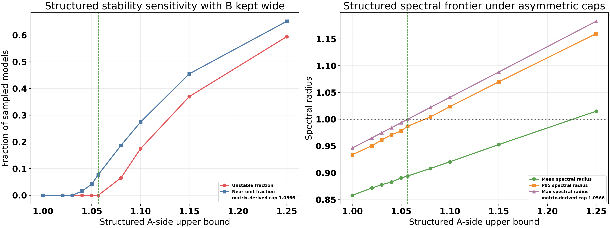
For polymer, A_high = 1.0566 was acceptable because it kept the structured spectral p95 below 1. For distillation, A_high = 1.01 is already conservative. Therefore, the structured distillation cap should be computed mostly through G_N, cost acceptance, and B authority, not through a tighter stability cap.
The current evidence points to four causes.
Warm start fills replay with nominal MPC actions. The current Phase 1 hidden release then keeps executing the nominal action for several subepisodes while the critic catches up. This is good, and it is now implemented through utils/phase1_hidden_release.py.
But after release, the actor objective is still the usual TD3 deterministic policy improvement:
There is no term that says:
during the first live deployment. So the critic can still overvalue actions outside the narrow baseline-action support. This is exactly the failure mode discussed in TD3 and offline RL literature: value approximation error and out-of-distribution actions can lead the actor toward bad actions [Fujimoto2018] [FujimotoGu2021] [Kumar2020].
Changing exploration and target policy smoothing noise to 0.01 makes the run less random, but it does not fix a biased actor objective or a wrong cost landscape. If the critic ranks a bad B correction too highly, small noise can still converge to that correction. It can also slow discovery of useful alternatives, which explains the user-observed pattern:
B Is A Performance-Sensitive Direction The active structured notebook output shows theta_A near 1.0 while theta_B moves noticeably. That is exactly what the configured bounds allow: tight A, wide B.
The problem is that B changes input-output authority directly. In distillation, reflux and reboiler duty are strongly coupled and constrained. A wrong gain correction can make MPC believe an input move will be more useful than it actually is, or make it allocate effort to the wrong manipulated input. This can worsen tray-24 composition or tray-85 temperature even when A is perfectly stable.
The distillation reward defaults are:
The reward also uses relative bands and inside-band bonus logic from utils/rewards.py, so the effective importance is not just Q1/Q2. Still, the earlier wide-range report already found that distillation is much more reward-asymmetric than polymer. If the first output dominates policy learning, the policy can recover reward while still not beating MPC in mean physical MAE or output-2 behavior.
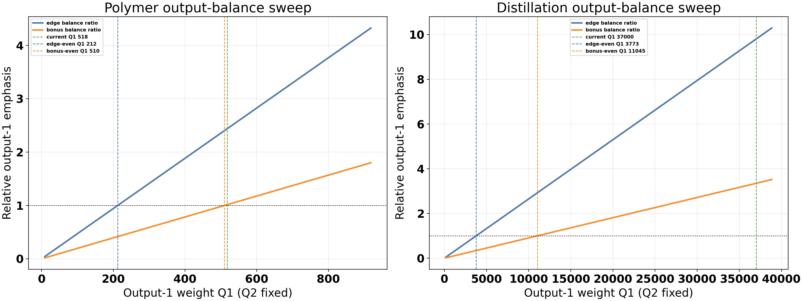
Do not keep narrowing A. Keep the current A default and add a protected effective-authority layer:
Use separate gates for A and B:
The mismatch gate should open only when tracking is bad:
This makes the multiplier method behave like residual authority:
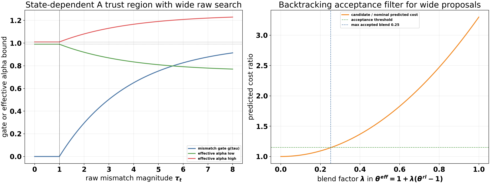
The next actor-side fix is a TD3+BC-style handoff regularizer. During the first K post-release subepisodes, change the actor loss from pure deterministic policy improvement to:
For matrix and structured matrix:
This is the normalized action that maps to all multipliers equal to 1.0.
Use a decaying weight:
First distillation values to test:
| Parameter | First value |
|---|---|
lambda_BC_0 |
0.1 |
T_BC |
10 subepisodes |
| BC dataset | warm-start plus recent nominal/fallback transitions |
| apply to | TD3 matrix and structured matrix |
This is directly supported by TD3+BC and offline-to-online RL literature: when training starts from narrow logged behavior, actor regularization reduces out-of-distribution action selection [FujimotoGu2021] [Kumar2020] [Nair2021].
Input:
nominal model A0, B0, C
MPC horizons Np, Nc
plant/result validation scenarios
raw low/high bounds for A and B
spectral target rho_target
gain-change threshold eps_G
cost-regression threshold eps_J
Build candidate set:
if matrix:
sample theta = [alpha, delta_1, delta_2]
if structured:
sample theta_A groups and theta_B columns
For each theta:
construct A_theta, B_theta
reject if structure is invalid or non-finite
reject if rho(A_theta_phys) > rho_target
compute G_N(A_theta, B_theta)
reject if ||G_N(theta) - G_N(0)||_F / ||G_N(0)||_F > eps_G
run short nominal-cost or rollout check
reject if candidate cost exceeds nominal cost by eps_J
Return:
accepted candidate set
low/high caps as robust accepted quantiles
corner-test report
Input:
actor raw action a_raw
multiplier bounds low/high
nominal multiplier vector theta_nom = 1
current tracking mismatch tau_t
actuator headroom h_t
nominal MPC cost J_nom
Map:
theta_raw = map_action_to_bounds(a_raw, low, high)
Gate:
lambda_A = min(mismatch_gate(tau_t), release_ramp(t), cost_gate)
lambda_B = min(mismatch_gate_B(tau_t), release_ramp_B(t), headroom_gate(h_t), cost_gate)
Build:
theta_eff_A = 1 + lambda_A * (theta_raw_A - 1)
theta_eff_B = 1 + lambda_B * (theta_raw_B - 1)
Accept:
while candidate predicted cost is worse than nominal:
lambda_A *= beta
lambda_B *= beta
rebuild candidate
Fallback:
if no accepted candidate:
theta_eff = ones
Run MPC with theta_eff.
Run these in order. Do not open a wider search until the previous line stops degrading relative to MPC.
| Experiment | A range |
B range |
New protection | Success criterion |
|---|---|---|---|---|
| D0 current TD3 | [0.99, 1.01] |
[0.75, 1.25] |
none beyond current Phase 1 | reproduce degradation/recovery |
| D1 cost fallback | [0.99, 1.01] |
[0.75, 1.25] |
nominal-cost backtracking | no release collapse |
D2 A gate |
raw wide or current | [0.75, 1.25] |
mismatch-gated A authority |
no worse than D1 |
D3 B gate |
current | [0.75, 1.25] raw |
headroom and mismatch-gated B authority |
lower final MAE than D1 |
| D4 TD3+BC | current | raw wide with gates | actor anchor to nominal action | faster recovery and no release trough |
| D5 reward rebalance | current | gated wide | lower Q1 ablation |
improve output-2 without losing output-1 |
The most important metric is not final reward alone. Track all of these:
Declare success only if:
Delta R_release is not a large negative drop,| Topic | Paper | Useful lesson for this project |
|---|---|---|
| TD3 overestimation and target smoothing | [Fujimoto2018] | Delayed policy updates and clipped target noise reduce overestimation, but do not guarantee safe release from narrow data support. |
| TD3+BC | [FujimotoGu2021] | A simple behavior-cloning term can keep a TD3 actor close to dataset actions under offline or narrow-support training. |
| Conservative critics | [Kumar2020] | Distribution shift can make standard off-policy critics overvalue actions outside the dataset. |
| Offline-to-online handoff | [Nair2021] | Prior data can accelerate learning, but the handoff needs behavior-aware updates. |
| Safe policy improvement | [Laroche2019] | Fall back to the baseline policy where uncertainty is high. This maps directly to nominal-MPC fallback for multiplier policies. |
| Trust-region policy updates | [Schulman2015] | Large policy changes are risky; staged authority and action-distance penalties are practical trust regions. |
| Constrained policy optimization | [Achiam2017] | Safety constraints should be explicit, not only encoded in reward. |
| Learning-based MPC safety | [Hewing2020] | MPC is a good safety layer for learning, but learned model or policy changes need uncertainty-aware protection. |
| Robust MPC uncertainty sets | [Kothare1996], [Limon2013], [Mayne2005] | Treat the multiplier family as an uncertainty set and grow it only while feasibility/performance remain acceptable. |
| Adaptive MPC and excitation | [Berberich2022], [Heirung2015] | Model adaptation requires informative data and guarded model maintenance, not blind widening. |
A,B matrix run: the direct matrix family can exploit broad authority. Use the capped-A reruns as the safer repeatable variant, not as proof that wide A can never work.A_high around 1.0566 as the first block ceiling, but move toward per-coordinate caps. A_off should be tested tighter than the diagonal blocks, and each B column should be capped by its own gain/headroom sensitivity.A. The latest observation already used [0.99, 1.01] and still degraded.A and B, with per-coordinate gates for structured mode. Do not force A_block, A_off, B_col_1, and B_col_2 to share one authority schedule.A be widened toward the larger distillation analytical stability cap. The current bottleneck is policy/performance safety, not spectral admissibility.